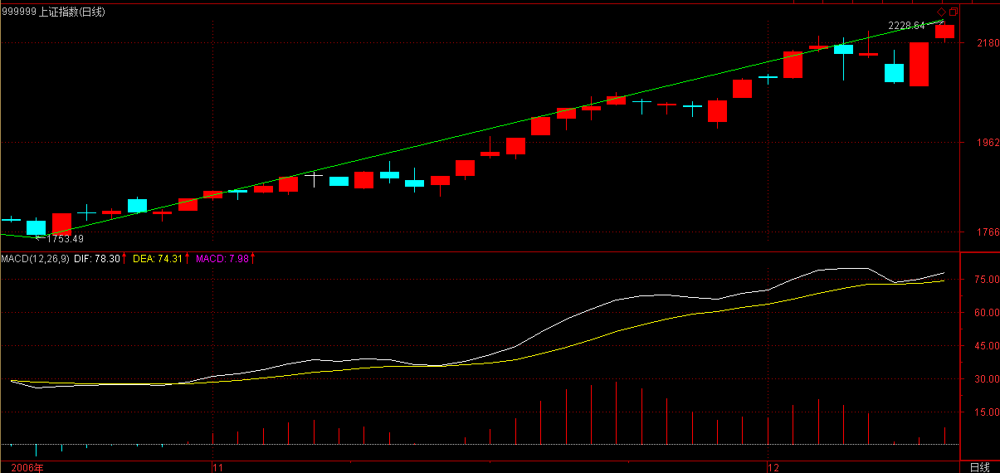
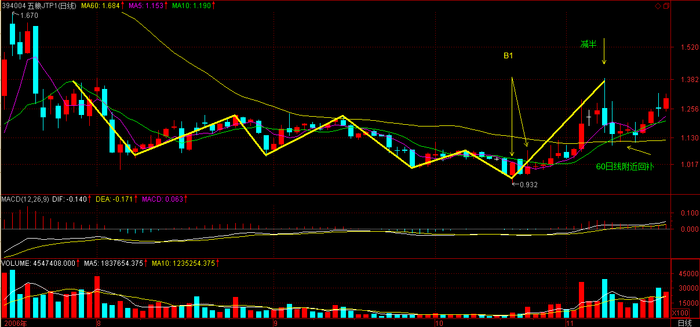
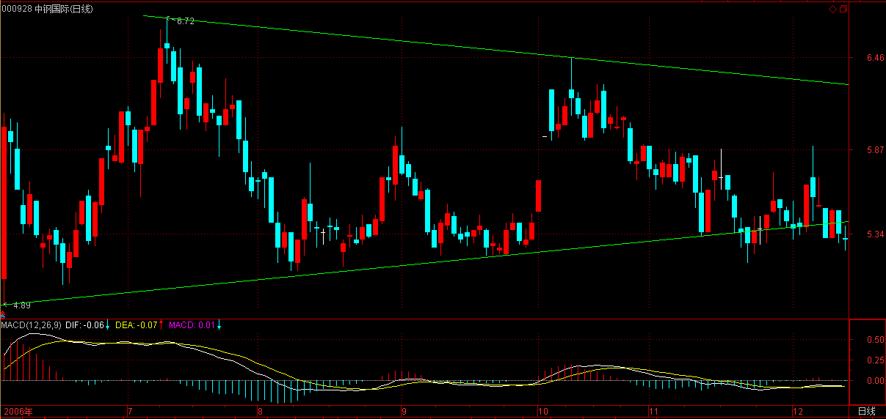
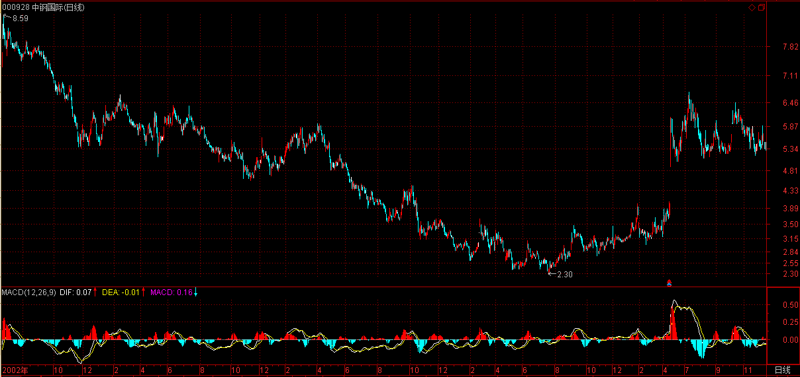
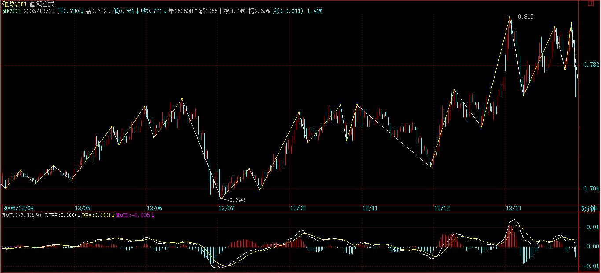

(2006-12-08 11:55:57)
【韶山映山红】原文配图600779水井坊日线图。新浪博客自动更新为当下的新图，这里贴上当时的日K线图。】
有人很关心诸如庄家、主力之类的事情，但散户、庄家的位次分野这类事情不过是市场之“不患”下的“患”，对本ID所解《论语》熟悉的，对此都很容易理解。有些东西是超越散户、庄家的位次分野的，这是市场之根，把握了，所谓散户、庄家的位次分野就成了笑话。如果真喜欢听有关庄家的逸事、秘闻，以后有空本ID可以说点，而且还可以告诉你如何阻击、搞死庄家，这一点，环视国内，没有比本ID更有经验的了。【韶山映山红】散户、庄家、主力之类的事情，不是不存在，缠师也跟我们一样的关注这些。只不过这些不是重点，重点是“有些东西”是超越这些东西的“市场之根”，需要我们去把握。一旦把握了“市场之根”，庄家、主力之类的，不过是猎人眼里的猎物，被阻击、被搞死。】
对于市场走势，有一个是“不患”的，就是走势的三种分类：上涨、下跌、盘整。所有走势都可以分解成这三种情况。【韶山映山红】第一个“市场之根”是走势的完全分类：上涨、下跌、盘整。】这是一个最简单的道理，而这才是市场分析唯一值得依靠的基础。很多人往往忽视最简单的东西，去搞那些虚头八脑的玩意。【韶山映山红】最简单的，往往是最基础的、最本质的。本质的，才是唯一值得依靠的。本质的，往往被表面现象所掩盖，被忽视。】而无论你是主力、散户、庄家，都逃不过这三种分类所交织成的走势。【韶山映山红】本质，是客观规律，不因人而异。】
那么，何谓上涨、下跌、盘整？下面给出一个定义。
首先必须明确的是，所有上涨、下跌、盘整都建立在一定的周期图表上，【韶山映山红】首先必须明确走势类型的级别。没有级别就没有一切。这时候的级别是“建立在一定的周期图表上”，还不是严格的递归。】例如在日线上的盘整，在30分钟线上可能就是上涨或下跌，【韶山映山红】日线上的当下正在盘整走势中，30分钟线的当下可能正处于大级别盘整中的小级别上涨或小级别下跌的过程中。】因此，一定的图表是判断的基础，【韶山映山红】分析走势，先选择级别。】而图表的选择，与上面所说交易系统的选择是一致的，相关于你的资金、性格、操作风格等。【韶山映山红】图表的选择，本质上就是操作级别的选择，要符合我们自己的客观条件。】这里说的交易系统是指前面课程所使用的均线系统。】
上涨：最近一个高点比前一高点高，且最近一个低点比前一低点高。【韶山映山红】这时候的上涨趋势是通道式上涨，或者说线段类上涨的形态。】
下跌：最近一个高点比前一高点低，且最近一个低点比前一低点低。【韶山映山红】这时候的下跌趋势是通道式下跌，或者线段类下跌的形态。】
盘整：最近一个高点比前一高点高，且最近一个低点比前一低点低；或者最近一个高点比前一高点低，且最近一个低点比前一低点高。【韶山映山红】这时候的盘整是发散型或收敛型的震荡走势。】
【韶山映山红】这里只对“上涨”、“下跌”做了形态上的描述，定义和经典技术分析理论的一样，高低点同步的抬高、降低，却没有提及什么是趋势。也没有把趋势和上涨、下跌挂钩。】
【韶山映山红】这样的上涨、下跌、盘整定义，和中枢走势类型的定义，有什么区别？或者说，哪些走势形态会相应的有不同的分类划分？★可以做个专题，以后研究。】
操作的关键不是定义，而是如何充分理解定义而使得操作有一个坚固的基础。【韶山映山红】充分理解定义想表述的走势形态。】
其中的困难在于如何去把握高点和低点，因为高点、低点是有其级别的，在30分钟图上看到的高点，可能在周线图上什么都没看到。为此，必须要均线系统来过滤，也就是前面常说的“吻”的概念，只有在“吻”前后出现的高、低点才有意义。【韶山映山红】不是机械的依据最高、最低点。偶发性的高低点，对均线不形成影响，就属于信号毛刺，需要过滤掉，不作为判断的依据。那些高低点如果经过确认，就会影响均线，进而形成各种吻，所以说在“吻”前后出现的高、低点才有分析的意义。这个确认的原则，一直贯穿整个缠论的进化史。】
【韶山映山红】转折形成的吻的高低点好办，震荡延伸形成的吻的高低点怎么分辨？★以后研究。】
这里，首先要搞清楚“吻”是怎样产生的。
如果一个走势，连短线均线都不能突破，那期间出现的高、低点，肯定只是低级别图表上的，在本级别图表上没有意义。【韶山映山红】这里说的是走势突破均线。不能突破短线均线，也就不能改变短期均线的轨迹，期间出现的高低点只有低级别的意义。】
当走势突破短期均线却不能突破长期均线，就会形成“飞吻”；【韶山映山红】当走势突破短期均线、然后恢复原来走势，就会让短期均线的斜率发生稍微的变化，而长期均线的变化很少，就会形成飞吻。】
当走势突破长期均线马上形成陷阱，就会形成“唇吻”；【韶山映山红】当走势突破长期均线、短时间就恢复原来走势，对长期均线的影响小，但是会让短期均线的斜率发生扭转的变化，形成唇吻。】
当走势突破长期均线出现一定的反复，就会形成“湿吻”。【韶山映山红】当走势突破长期均线，持续一定的时间，或者出现一定的反复，就会引起短期均线的大幅度的扭转，形成湿吻。】
由此可见，“吻“的分类是基于对原趋势的反抗程度，【韶山映山红】与原趋势相反方向的市场分力对原趋势的反抗程度。吻更接近于线段类的转折。后来进化出来的中枢的概念，也是基于对原趋势的反抗，并且注重反抗力度的再次确认。】
“飞吻”是基本没有任何反抗力，【韶山映山红】反抗还没有确认就失败了，原趋势继续。】“唇吻”的力度也一般，【韶山映山红】反抗确认了，但还没有形成实质性的影响就失败了，原趋势继续。】而“湿吻”，就意味着力度有了足够的强度，【韶山映山红】反抗确认了，短期均线转向，长期短期均线的位置关系翻转，形成了实质性的影响，原趋势至少形成了一个中继，甚至可能终止。】而一切的转折，基本都是从“湿吻”开始的。【韶山映山红】一般的转折都从湿吻开始，小转大的转折形成湿吻比较滞后。】
转折，一般只有两种：【韶山映山红】转折的走势类型组合的分类只有两种：趋势+反趋势，趋势+盘整。转折的形态组合的分类只有两种：本级别背驰，小转大。】
一、“湿吻”后继续原趋势形成陷阱后回头制造出转折；【韶山映山红】次级别转折，形成湿吻，然后又次级别转折继续原趋势，形成线段类盘整背驰，最终形成转折。】
二、出现盘整，以时间换空间地形成转折。【韶山映山红】第二种情况与第一种情况的区别，是没有湿吻？还是有湿吻但没有继续原趋势形成背驰？★以后研究。】盘整就不是单纯的吻，而是有纠缠了。】
第二种情况暂且不说，【韶山映山红】缠师暂且不说了，我们来说，第二种情况是什么样的走势？没有本级别背驰，小转大形成新走势的中枢盘整，最终形成转折。】第一种情况，最大的标志就是所谓的“背驰”了。【韶山映山红】形成陷阱最大的标志就是背驰，否则就是弄假成真不算陷阱了。】
必须注意：没有趋势，没有背驰。【韶山映山红】这个时候的趋势还属于线段类上涨或线段类下跌，还没有进化到（a+A+b+B+c）的趋势。所谓“没有趋势，没有背驰。”说的并不是趋势内部的走势衰竭，其实是两段具有明确方向性的走势之间的力度比较，是“上一次”和“这一次”的对比。这时候的背驰包括abc盘整背驰的两段的比较，以及中枢盘整背驰a+A+b的a和b的比较。】
在盘整中是无所谓“背驰”的，这点是必须特别明确的。【韶山映山红】这时候的盘整定义相当于中枢盘整震荡，而背驰是abc盘整背驰和a+A+b中枢盘整背驰，所以这时候的盘整中当然也就无所谓背驰。】
还有一点是必须注意的，这里的所有判断都只关系到两条均线与走势，和任何技术指标都无关。【韶山映山红】没有缠论的时候，背驰的意思就是股价朝一个方向走而技术指标没有同样的朝那个方向变化，甚至出现相反的变化。缠论的背驰是对两段趋势的力度的评判，所以缠师在这里强调“和任何技术指标都无关”。】
如何判断“背驰”？
首先定义一个概念，称为缠中说禅趋势力度：前一“吻”的结束与后一“吻”开始【韶山映山红】死叉和金叉之间。】由短线均线与长期均线相交所形成的面积。【韶山映山红】这个时候还没有提出中枢的概念，也没有正式引入MACD作为辅助指标，所以这里的趋势力度用均线面积来衡量。其实MACD本身就是短线均线与长期均线相交所形成的面积的一种更为复杂的计算方式。缠师真正的力度指标依然是个谜，MACD的辅助和均线系统一样难免有些差强人意。】
在前后两个同向趋势中,当缠中说禅趋势力度比上一次缠中说禅趋势力度要弱，就形成“背驰”。【韶山映山红】这里明确提出缠论自己的背驰概念，以区别于外面那些妖艳的东西。背驰是走势力度衰竭的表现。这里说的是两个趋势之间的力度比较。】
按这个定义，是最稳妥的办法，但唯一的缺点是必须等再次接吻后才能判断，这时候，走势离真正的转折点会已经有一点距离了。【韶山映山红】右侧交易的必然。】
如何解决这个问题：第一种方法，看低一级别的图，从中按该种办法找出相应的转折点。【韶山映山红】高级别图上区分转折段，低级别图上寻找转折点。有时候不是低一个级别，要使用区间套的方法考察更低级别的。】这样和真正的低点基本没有太大的距离。【韶山映山红】提高灵敏度和精度，势必降低可靠度。】
还有一种方法，技巧比较高，首先再定义一个概念，称为缠中说禅趋势平均力度：当下与前一“吻”的结束时短线均线与长期均线形成的面积除以时间。【韶山映山红】说的是平均力度，实际上考察的是面积变化的速率。】因为这个概念是即时的，马上就可以判断当下的缠中说禅趋势平均力度与前一次缠中说禅趋势平均力度的强弱对比，一旦这次比上次弱，就可以判断“背驰”即将形成，然后再根据短线均线与长期均线的距离，一旦延伸长度缩短，就意味着真正的低部马上形成。【韶山映山红】简易的两层区间套，类似于MACD的黄白线和柱子长短。】按这种方法，真正的转折点基本就可以完全同时地抓住。但有一个缺陷，就是风险稍微大点，且需要的技巧要高点，对市场的感觉要好点。【韶山映山红】缠师自己也说“风险稍微大点，且需要的技巧要高点，对市场的感觉要好点。”因此这个方法掺和了人为因素，也就失去了数学保证，不符合缠师所说的机械操作法。】
纯粹的两条均线的K线图，就足以应付最复杂的市场走势了。【韶山映山红】根据两条均线的关系，先判断是趋势还是缠绕。然后对两段趋势做力度比较。背驰就操作。】
当然，如果没有这样的看图能力，可以参照一下技术指标，例如MACD等，关于各技术指标的应用，以后会陆续说到。【韶山映山红】后续课程放弃了均线系统，转而全面使用MACD辅助判断。】
最近新浪的系统很有问题,今天怎么都排不好版.各位将就着看吧.
2006-12-8 12:11
最终搞好了,字体大了,这新浪人太多了,系统太不稳定.
2006-12-8 12:18
[匿名] 老老没用 2006-12-08 12:16:56
说的好啊！把精髓性的东西说出来了。慢慢品味，学习实践，变成自己直觉性的东西。那就是大成啊！
=============
这就好
2006-12-8 12:19
[匿名] iris 2006-12-08 12:16:47
楼主真乃神人也，疯狂学习中。可惜我是新手，看起来比较费劲
===========
慢慢来,有的是时间\机会.
2006-12-8 12:20
小明 2006-12-08 12:06:19
我来迟了，报个道。LZ真的不再说大盘了？
=========
暂时不说,等哪天大家不那么鼓噪再说.
有些事情,各位不需要太了解,有些事情,乱猜想也没用.
2006-12-8 12:22
[匿名] 小溪2006-12-08 12:32:05
缠JJ我的股票600196没出现吻已经跌去一大截了等吻出来那不是都跌没了55555555我咋办呢?【韶山映山红】操作级别大，就要忍受更大的回撤。】
===========
你的理解错误.你好好品味这句话:
首先必须明确的是，所有上涨、下跌、盘整都建立在一定的周期图表上，例如在日线上的盘整，在30分钟线上可能就是上涨或下跌，【韶山映山红】这里就是以逗号结束的问答，没有摘录的后半句话是：“因此，一定的图表是判断的基础，而图表的选择，与上面所说交易系统的选择是一致的，相关于你的资金、性格、操作风格等。”】
2006-12-8 12:35
[匿名] 中间体 2006-12-08 12:31:36
就是说形成趋势后再谈背驰, 背驰的力度是根据面积判断. 但是不是有可能出现背驰后还会有第二个背驰呢?请缠姐回答.
============
上面说600196的那位,必须也要如此理解:形成趋势后再谈背驰.
对于一段趋势来说背驰只会一次.里面还有一个微妙的东西,过两天说.
【韶山映山红】背驰和背驰段有区别。背驰段成功了就是背驰，失败了就是背驰段被破坏。背了又背往往是背驰段没有结束。】
2006-12-8 12:39
任我行 2006-12-08 12:37:19
楼主真是一大伟人。无私的把自己的技术向社会奉献了
我喜欢短线。楼主能不能多说点短线操作方法。
还有要怎样才能知一个股票有没有主力。就好象这几天走强的600050来事把要怎样发现他要拉升
============
长线短线的技术基础是一样的,只是看的图表不同,最短线的就看1分钟图,一般看5分钟或30分钟图.
2006-12-8 12:40
[匿名] 中间体 2006-12-08 12:40:02
一定是二个相邻的面积比较吗???
===========
是,要多看图,面积这东西,目测就可以知道,不用什么指标.
【韶山映山红】准确地说，不是两个，是两组。每一段趋势都可能包含有几个小面积块，要分别求和，所以说，是两组面积块的比较。】
2006-12-8 12:41
[匿名] 外科医生 2006-12-08 12:38:27
如向北辰股份那种走势,如何判断其卖出信号,现在如何处理为最佳方案(首先强调,我并没有该股,只是以此举例而已)?谢谢?。。。。。。。。。。昨天下午2点发生背迟，卖出信号
===========
对,该股30分钟图上的辈驰什么明显.

对这种短线走势特别猛的,如果资金不太大的,不能看日线,那反应太慢,看30分钟线足以.
【韶山映山红】30分钟看到的其实是次级别背驰。下面的5分钟图更明显。】
2006-12-8 12:44
[匿名] 半部论语治天下 2006-12-08 12:43:45
有个问题，均线交叉形成的面积是不规则的，如何计算？【韶山映山红】一般并不去真的计算，就是一个直观的感觉。实在难以分辨，就要降低K线图的级别。再分辨不了，就是力度接近，不算背驰了啊。】
=============
形成趋势的才算面积,否则不断缠绕的,是盘整.这必须搞清楚.【韶山映山红】缠师满脑子的“没有趋势，没有背驰。”答非所问了。】
2006-12-8 12:45
[匿名] nn 2006-12-08 12:29:25
首先感谢楼主无私教诲,但理论性较强,年龄老了,还需要漫漫领会,有一点不明,比如向北辰股份那种走势,如何判断其卖出信号,现在如何处理为最佳方案(首先强调,我并没有该股,只是以此举例而已)?谢谢?
=============
这种短线太猛的,看30分钟图,卖点十分清楚.
目前如果没走也不用怕,反抽会很猛烈的,就等着吧.
【韶山映山红】这时候怎么知道“反抽会很猛烈的”？以后研究。★依次看当时的日线全景图、30分钟、5分钟逐步放大图。】

2006-12-8 12:47
心禅 2006-12-08 12:47:20
“禅主”，你好，我来了，稍晚点，卖点的疑惑：从个股看，第一卖点并未出现，可大盘的调整下跌必使其下跌，此种情况如何回避？是不考虑大盘的下跌继续持有吗？
============
这种情况根本不会出现,关键是图表选择的问题,【韶山映山红】实际上是级别选择的问题。】
像北辰实业这次,在日线上没有第一类卖点,

在30分钟线上就十分明显,
关键是你如何选择.
【韶山映山红】外部原因的突变引起的变化，可能不足以形成本级别的背驰，但是会在次级别以下级别形成背驰，通过小转大的形式展现出来。小级别的背驰会引起多大级别的转折？相关过程如何分析？后面的课程会陆陆续续讲到。不过总的来说，小转大的问题，是缠师没有足够用心阐述的潜在重点。】
2006-12-8 12:52
公告一条缠中说缠定理
任何的上涨转折都是由某级别的第一类卖点构成的；任何的下跌转折都是由某级别的第一类买点构成的。
注意版权.
【韶山映山红】前面说的内容是，两个走势类型的切换点就是第一类买卖点。这时候开始提到更低级别背驰带来的转折。】
2006-12-8 12:56
[匿名] 中间体 2006-12-08 12:56:34
缠姐没给出结论啊, 面积比越大越好还是越小越好啊, 应该是小吧.
==========
上面写的很清楚,比前面的小就可以了.好好研究这句话
如何判断“背驰”？首先定义一个概念，称为缠中说禅趋势力度：前一“吻”的结束与后一“吻”开始由短线均线与长期均线相交所形成的面积。当缠中说禅趋势力度比上一次缠中说禅趋势力度要弱，形成“背驰”。
2006-12-8 12:58
开盘了,先下.再见.
2006-12-8 12:59
庸人 2006-12-08 14:32:52
世上本无事，庸人自扰之。一个小小的北辰实业，就能够让大盘尸横遍野。所有的繁荣只不过是虚幻，过眼烟云而已。
=======================
小明 2006-12-08 14:55:02
自称庸人的人水平的确不怎么样！
缠mm曾经说过，不要跟着那些小资金后面玩，要多看看大资金在干什么。你看看几大龙头股哪个不是筑成了双重顶？而北辰只是个导火索而已，just一个引线，懂吗？
============
干什么都要有预见性，这调整,1日已经提前提醒了，不相应操作是心态问题，被市场迷惑了。
繁荣只不过是虚幻，不繁荣也只不过是虚幻，不明白这点，总是一边去想，是不可能成为好的操作者的。好的操作者就是以幻制幻，幻中取利。
大盘跌，意味着机会又来了，应该高兴才对。当然，满仓的就没办法了。
2006-12-8 15:04
中间体 2006-12-08 12:40:02
一定是二个相邻的面积比较吗???
===========
是，要多看图，面积这东西，目测就可以知道，不用什么指标。
中间有盘整区的话, 是否可跳过盘整区与前面比较???
==============
盘整不是趋势，当然不算。
2006-12-8 15:06
本ID有应酬先下了,各位慢看,再见.
【韶山映山红】当天的日Ｋ线图和线段初始化的走势类型分析。】
2006-12-8 15:07
[匿名] frogleg
从这一章引发的一些思考：怎样操作尽量少点风险？背驰是怎样出现的？
1、只考虑上升曲线或下降，不考虑中枢变大。
在总体上升曲线上，前者降的力度小而引起背驰（不考虑中枢变大）。
为什么本段要降的快些？是政策影响？是想节约时间，早点拿多点筹码？等等，不论如何，从背驰买进当然有可能赚的快点，这种考虑有可能是建立在相似原理的基础上。
在总体下降的曲线上，曲线降的慢引发买入，为什么？是想卖的筹码不多了？那么引起中枢回折，但反弹的高度和速度限制，这样的买点风险大。
那么有没有可能上升下降没有背驰呢，每次曲线力度一样，应该有，不过这样的操作比较麻木了，这与贪心不符。如果碰到这种情况，没有背驰，转折可以小量尝试一下，虽然利用率低。
2、考虑中枢变大
中枢变大意味走势反转离开原思想范畴的z，比较讨厌的是下坡，当然V形也出乎意料，2007就是。这样，要选择的是避免前者，后者虽然心情也波动点，但不太影响生活花销。
避免前者，就需要看均线或顶背驰和rsi等等，若是盘整也要退出，这就要多选几个股，免得碰到早泄的，这就多花了心神。
根据以上这两点，成立的关键是要参加时期的曲线到底是向上还是向下的，这需要有大智慧，要多看信息，这是唯一要赌的。
就想到这里，谢谢缠老师的无破绽、详细、按步就班的文章。
其实已经看了好几遍了。
再次感谢，授人以鱼，亦授人以渔，您全做到了。
2007-3-1 20:29
学习过了.
总结:
趋势在特定的均线系统中才具有意义.
在本级别中,只有均线的相交才有趋势变化的可能.
在趋势确立的情况下,背驰才存在.盘整不所谓背驰.背驰由两条均线走势所构成.
趋势是阴阳此消彼长的表现.本级别的买卖点参照次级别的趋势选定则更为精准.
2007-4-27 18:25
(2006-12-09 11:20:08)
当面首
把第一次交给右手时
天才在干什么
对面首第一次这种委琐的事情,本ID没什么研究,只是听说现在面首的第一次早向幼儿园阶段与时俱进了.因此,站在严格的意义上,这个题目已经不适合当下.不过,无论第一次还是第一万次,面首的当下永远只是裆下,因此对于当下的面首,这个题目永不过时.
当面首把第一次交给右手时,天才在干什么?这样的题目并没有歧视左手的意思,只是因为ID对于左手与右手在面首的当下工作中有什么分配了解不多,因此只好用右手来指代了.对此,面首的左手是可以提出抗议的.但无论是左手和右手,其最后的结果都是一样的,就是制造出一些污染空气的物质,然后把那物质涂满地球的每个平面，最后向空气宣称,这是面首当下的世界.
天才的物质只涂抹在五根洞穿天地的黑线上,千百年后,这沸腾的物质依然在天地间回响.两位说德语的天才,也是在本ID心目中唯一的两个天才,两个离开年龄加起来还能证明"人生七十古来稀"的天才,对于他们的第一次,文字总是多余的.
关闭一切的背景音乐,打开你的心,不需要任何太好的音响,心只能用心感受.
今天的北京,难得的阳光,本ID要出去撒点野,可惜没有雪.
各位慢看慢听,如果有文章要交流的,可以到本ID开的圈子里,现在已经有不少人发了不少文章,各位除了来看本ID的,也可以去看看其他人的.
无论你是天才还是面首,男人还是女人,无论是吐沫还是其他白色物质,都可以涂抹其上,只要新浪没意见就可以.
好了,周末好,本ID撒野去了,再见.
2006-12-9 11:42
(2006-12-10 12:09:22)
子曰：由诲女，知之乎！知之为，知之；不知为，不知；是知也！
杨伯峻：孔子说：“由！教给你对待知或不知的正确态度吧！知道就是知道，不知道就是不知道，这就是聪明智慧。”
钱穆：先生说：“由呀！我教你怎么算知道吧！你知道你所知，又能同时知道你所不知，才算是知。”
李泽厚：孔子说：“子路，我告诉你什么叫求知吧：知道就是知道，不知道就是不知道，这就是真正的知道。”
详解：
以上三位及通常的断句都是“由！诲女知之乎！知之为知之，不知为不知，是知也。”关键的问题是“由”究竟指什么？是不是通常所认为的孔子弟子“子路”？在“由知、德者，鲜矣！”一章中，已经否定了“由”指“子路”的一贯说法，本章也如此。
关于这点，现给出一个具体的分析。
在《论语》中，孔子一贯称呼子路都有一个固定用法，就是“由也”。例如“由也好勇过我，无所取材”、“由也，千乘之国，可使治其赋也，不知其仁也”、“由也果，於从政乎何有？”、“由也升堂矣！未入於室也！”、“片言可以折狱者，其由也与！”等等。
而且这种语法现象并不单单用在子路身上，《论语》中孔子也一贯用“回也”称呼颜回，例如“贤哉，回也！”、“回也，非助我者也！”等。特别这一句，把子贡也捎上：“赐也何敢望回？回也闻一以知十，赐也闻一知二。”
由此可见，这是《论语》中的标准用法，把“由”当成“子路”，绝对是胡来。本ID现在将一个两千多年来一直延续的语法错误给纠正了，“由”绝对不能当成“子路”。
还有，“知之”的“之”究竟指什么？通常的翻译都把这“之”给掩掉不翻了，如果真是这样，为什么原文不直接就用“知为知，不知为不知，是知也”？
抛开语法问题，通常的解释同样可笑：知道就是知道，不知道就是不知道，这就是真正的知道，就是聪明智慧？你知道你所知，又能同时知道你所不知，才算是知？如果真是这样，最能知道的、最有智慧的一定是这样一台机械，它有如下程序：它只回答关于自己知道还是不知道的问题，而答案只有两个：知道和不知道；然后它严格地被设定成按固定程序的知道与不知道来给出知道和不知道的答案。如此解释，是典型的愚民把戏。
一个问题就可以把这种把戏拆穿：知道知道如何知道为什么知道，知道不知道如何不知道为什么不知道，知道与不知道的可判别是如何被知道的，如果这个可判别性都不能被判别是知道还是不知道，还知道不知道什么？这类把戏，和前面各种“鲁式”把戏一样是同种同源的混蛋逻辑。
正确的断句是：“由诲女，知之乎！知之为，知之；不知为，不知；是知也。”
其实，本章的“由”与“知”，都顺着上一章的“民可，使由之；不可，使知之”而来。“由”，蹈行、践履，用一个更常用的词语，就是“实践”；“诲”，教导；“女”，汝之通假，你的意思，这里泛指一切人类。“知之乎”，“之”，指代“由诲女”，“知之”，以之而智，以实践所教导你而有智慧。
“为”，“伪”也。何谓“伪”？非先天，人为也。所有的创造、创新，都是人为，没有人为，何来创造、创新。“为”，就是“由”，就是现实人的现实实践。“知之为”，以知而为，依智慧而实践。“知之”，以之而智，以依智慧而实践所得而有智慧，“之”指代前面的“知之为”，而此智慧，与原来“由诲女”而有的智慧，经过了“知之为”而有所不同，因而是新的智慧，“为”，相对前面的“由”，也是进一步的实践。“不知为”，不以知而为。“是”，复指上文“知之为，知之；不知为，不知。”并对此进行论断及归纳，“这是”、“这就是”的意思。
在“天地人”结构下，道家的“无为”立场，对“人为”抱有极大怀疑。何谓“无为”？无人为也。道家相信“天地人”结构中有一先天自然之道，所以有“人法地，地法天，天法道，道法自然”之论，进而假设人最初的状态最接近自然，因此要返朴归真，要能婴儿，进而要破除一切人为刻意，诸如此类。儒家是不会假设什么先天自然之道的，儒家不相信任何脱离现实的所谓智慧，不相信有什么先天的智慧先验地存在，更不相信只要找到这种智慧就一通百通、成圣成仙。儒家只相信智慧是人为的，是实践的，是实践中来的。
“有为”，儒家的基本立场，就是一切以人类的现实实践为基础，人类的一切智慧离不开人类的现实实践，而现实实践也离不开智慧的总结。由此可见，孔子和马克思还是这样心心相印。在上一章中，强调了“由”与“知”的问题。这一章就是要揭示这两者之间的关系：“由”是“知”的基础，没有“由”，无所谓“知”；但“由”离不开“知”，依“知”而“由”而“为”，才有新“知”，才有创造、创新，而这才是最根本的智慧。而这最根本的智慧也不是凭空而来的，也是由人的历史实践而有的。而且，这种实践而智慧，智慧而实践的过程就是“易”，就是生生不息的人类生存本身。
缠中说禅白话直译
子曰：由诲女，知之乎！知之为，知之；不知为，不知；是知也。
孔子说：实践教导你，以此而有智慧啊。依智慧而进一步实践，以此而有新的智慧；不依以实践而有的智慧进一步实践，就不会有新的智慧。这，就是最根本的智慧。
（待续）
如果有文章要交流的,可以到本ID开的圈子里,现在已经有不少人发了不少文章,各位除了来看本ID的,也可以去看看其他人的,更可以自己发文章互相交流.
方法:点击本ID首页"我的圈子",然后按新浪提示操作就可以.
2006-12-10 12:21
袖手旁观 2006-12-10 12:25:57
哈哈，这个解读有意思。如果说上篇比较容易想到，也曾这么想过的话，这一篇实在是相当的有启发。
扯开一句，缠mm在《货币战争和人民币战略（上）》中“美国经济将在今后一两年的平台整理后进入真正的、更具杀伤力的下跌，而这下跌只是更大级别下跌的前奏。”是3年前的话，现在是否有更新？当然长期战略观点是不需要频繁更新的。
=================
这个下跌早用资源类的上涨与货币的贬值化解了.关键的周期在2019年,这是最重要的.那更大级别下跌值的就是这个.
但这种化解只会导致更大的问题.
另外,这里说一句狠话:美国股市短期之所以能用这种化解的方式,中国的功劳大大的.
本ID当时立论的前提就是人民币不能动,这是一个关键的前提,95年7月这个前提已经没有了,因此而引发的资源类大涨的化解就在情理之中了.
但2019年的大周期是无可化解的,关键的问题是中国不要上那贼船.
2006-12-10 12:31
2005年7月,本ID帖子的题目就是"中国货币战争中的“七七”事变！ "
但对于美国,至少因此短线可以松口气了.其后资源类的大涨是新一轮掠夺的开始,现在全世界股市的上涨也是同一回事情,因为中国这大肥肉进来了,又有新的东西好吃上几年了,国企的大面积被收购在这大背景下都是小事情了.
但这是改变不了2019年的经济大周期的.谁和美国这贼船系得更紧,没有自己独立的战略,最后唯一的作用就是什么,不言而喻.
2006-12-10 12:40
[匿名] nn 2006-12-10 12:28:22
先报个到,问个好,周末愉快.
==========
周末愉快
2006-12-10 12:42
[匿名] nn 2006-12-10 12:45:16
请问楼主：楼主所解的论语是个别挑选来解还是将整个论语全部截完？谢谢
========
当然是全部
2006-12-10 12:53
[匿名] 你的样子 2006-12-10 12:51:58
再读一遍货币战争和人民币战略
==========
那个策略现在已经没用了,因为2005年7月人民币已经放开,那是一个最干脆的策略,但需要大魄力.
其实这个逻辑关系本ID已经说过,2005年7月对于全世界经济都是一个关键的转折点，如果当时中国能顶住,一切都不是现在这个样子.当然,现在对于个人来说没什么不好的,这一年半来投资的机会多多,本ID没什么意见.
但对于国家来说,如果只想当老二\老三,也没什么不好的,至少有短期的繁荣.
但如果要当老大,那最好的时机已经失去,只能等待下一次机会了.用本ID的股票术语,第一类买点过了.等第二类买点吧.
而本ID货币战争和人民币战略的前提是:中国要成为老大.如果大家都觉得成为老大没意思,那些文章都是没意义的.
但本ID还是要觉得,中国就是要成为老大,爱咋咋地.
2006-12-10 12:59
缠中说禅 2006-12-10 12:40:20
2005年7月,本ID帖子的题目就是"中国货币战争中的“七七”事变！ "
但对于美国,至少因此短线可以松口气了.其后资源类的大涨是新一轮掠夺的开始,现在全世界股市的上涨也是同一回事情,因为中国这大肥肉进来了,又有新的东西好吃上几年了,国企的大面积被收购在这大背景下都是小事情了.
但这是改变不了2019年的经济大周期的.谁和美国这贼船系得更紧,没有自己独立的战略,最后唯一的作用就是什么,不言而喻.
----------
[匿名] nn 2006-12-10 12:54:06
特别欣赏这句＂其后资源类的大涨是新一轮掠夺的开始＂.顺便请教一下：楼主如何看待ＬＭＥ市场此次电解铜的调整？最低会去到哪里或还是不去预测而等待市场出现转机？谢啦！
==============
年尾,就算是最凶横的多头也要歇一歇了.但资源类的上涨是化解美国经济困局的最直接方法,也是世界新格局新分配的一个大游戏,和19世纪\20世纪的殖民浪潮是同一回事情,这个游戏没完,一切都不可能结束.
2006-12-10 13:03
[匿名] nn 2006-12-10 13:04:51
本ID当时立论的前提就是人民币不能动,这是一个关键的前提,95年7月这个前提已经没有了,因此而引发的资源类大涨的化解就在情理之中了.
-------------
上面是95年7月还是05年7月?
=========
笔误,当然是05年7月
2006-12-10 13:11
[匿名] 暗夜行路 2006-12-10 13:10:31
原来这句话能这么解读啊。古代没有标点符号还真是害人
=========
古人根本不存在这个困难,好象"由"不是指子路,这样的问题,古代人根本不会搞错.之所以后人经常出问题,就是把一些后来才有的用法套在古人身上.
本ID的解释和什么标点不标点无关,本ID的前提就是:首先语法上不能有问题,像"由"当"子路"这种问题绝对不能发生.
2006-12-10 13:14
[匿名] 古代 2006-12-10 13:11:07
是不是与美国自由经济有关.当货币大于商品是不是造成所谓“通涨”只有通过调控货币才能有益市场发展。资源类的大涨短期是否是一种假象意在以后通过经济掠夺.好像美国“基金”掠夺惯用手法
===============
对于美国,“通涨”是全世界的人去为他分担的,美国是最不怕“通涨”的国家.换句话说,“通涨”这武器一旦起用,受伤最小的肯定是美国,美国已经用这样的武器把日本等打败过了,人民币的放开,最大的问题使得美国这杀手用能发挥充分的效用.
2006-12-10 13:18
[匿名] 淡定 2006-12-10 13:15:42
个人认为，05年7月错过第一个买点不是我们的主动选择，而以后这一年多来的所有变化只不过是我们的一种顺势而为的举动。当然每个炎皇子孙都愿意自己的国家成为老大，但这也要天时、地利、人和，愿我们的ZF发挥中国人的大智慧，卧薪尝胆最终得以笑傲世界！
=========
我们本可以主动选择,这就是为什么本ID要写"中国货币战争中的“七七”事变！ "
2006-12-10 13:20
公告
明天本ID将推出《货币战争和人民币战略》的续篇,对2005年以来的经济大环境以及中国可能的对策进行分析.
2006-12-10 13:23
有事先下,再见.
2006-12-10 13:32
(2006-12-11 11:47:11)
3年多前，本ID写了《货币战争和人民币战略》在网上流传，当时写的立场很明确，就是探讨在大的世界经济格局变动里，中国如何借机成为老大的问题。其中有一个很重要的前提和目的：反对人民币升值。
显然，这个前提和目的在2005年7月以后已经不成立，本ID当天写了“中国货币战争中的“七七”事变” 。因为《货币战争和人民币战略》的策略前提已经不存在，按本ID的股票术语，长线的第一类买点过去了，只能等待第二类买点的出现了。
任何对经济有一点常识的，在2005年7月宣布人民币升值的那一刻，就知道一轮由资源类牛市所拉开的资本全球化掠夺大戏从此波澜壮阔。其后资源类的大涨，全球股市的大涨都在预料之中了。本ID也忙着去抽血，没时间对《货币战争和人民币战略》进行总结。
一个趋势形成后，全世界的人只能顺势而为，无论你有什么观点，先把利益抢到手再说。
这世界没有什么必然成立的观点，观点是需要利益和力量实现的。
但在该文中，有些最基本的观点并不随着形势的改变而改变。这些最基本的观点，本ID都收集在“民族复兴周期与世界经济周期历史性共振下的国家地缘与货币战略”中，主要包括： “资本主义经济循环中其总体饱和度和人口关系存在类似电子轨道量子化般5倍递增的结构。1000万和5000万人口在中古和近代是完成所谓强国的两个基本人口数量。在大不列颠王国以5000万数量级别完成其霸业后，美国和苏联在2亿5千万级别完成了它们的历史表演，而下一个级别就是12亿5千万级别，目前世界各经济体之间的联盟是为资本全球化12亿5千万级别的竞争储备力量。
1929年，英德老的5千万级别主导循环结束，美苏2亿5千万级别主导循环开始；这个90年的循环在一半1974年形成了石油危机的中型调整，美苏这两个不同类型的资本主义之间的同级别竞争以美国的胜利结束；该循环的高点已经在2000年出现，下面面临的巨大调整将在2019年达到如1929年般惨烈的程度，从而宣布该级别的结束，12亿5千万级别世界经济大循环周期的开始。”
对于中国的现实来说，最根本的问题在于如何把自己从12亿5千万级别世界经济大循环周期的有力竞争者变成最终的胜利者。
这里有一个问题必须说明：站在美国主导的角度，2000年的网络热潮所造就的世界性高点，从本质上就是这轮90年大循环的高点。这有点类似股票市场里，大龙头的引导潜力开始衰竭，其实就是市场开始转折的起点。当然，市场还会继续创新高，但轮炒三线的新高，往往不过是在导演最后的冲刺。2000年，是美国盛极而衰的开始，也是这轮90年经济大循环大龙头盛极而衰的开始，意义深远。
2000年以后，整个世界经济大格局用一句概括就是：寻找新龙头。注意，老龙头通过休整后，也可以继续充当新一轮行情的龙头，这也是美国其后所有动作的最根本意义所在。站在这个高度上，任何其后的资金分流现象，如果真的以为是资金已经找到新龙头，那就大错特错了。这只不过是轮炒而已，对于一轮行情的尾声，是不存在所谓新龙头的。
由于2005年7月的人民币升值，使得美国经济度过短线的难关，从而使得“美国经济将在今后一两年的平台整理后进入更具杀伤力的下跌，而这下跌只是更大级别下跌的前奏。”前半句话需要修改，相应走势变成不从这个平台直接下跌，而是向上突破形成多头陷阱，这个多头陷阱目前依然在制造之中，在最极端的意义上，最疯狂的走势还没有出现。2008年是1997年与2019年的一半位置，其前后是一个值得关注的时间之窗。但其后半句无须修改，多头陷阱的上升以及其后的下跌也不过是更大级别下跌的前奏，这个毁灭性的下跌将在2019年前后达到最高潮。
新龙头的最终确立，必然是2019年毁灭性下跌后的一个事件，这一点都毫无疑问也无须更改。如果本ID是美国战略的策划者，本ID就按这样的根本思路来展开：诱多。用更明确的语言，就是把一切可能成为新龙头的都消灭在一个多头陷阱之中，从中调整好自身的结构，为自己最终能继续霸居龙头位置而布局。
注意，这里的消灭不是真正意义的消灭，而是在一个多头陷阱中达到控制的目的，使得一切可能成为新龙头的可能最终都控制在美国手里。
站在长线大思路上，这就是美国人必然采取也正在采取的策略，今后10几年，政治、经济斗争将日益惨烈，当然，这一切在大多数情况下都会以一种和平甚至平和的方式进行，而真正洋流在海平面下。
目前美国在各地的军事行为，不过是最终为其龙头地位的再确立而服务的。站在美国的角度，在伊拉克的戏已经达到了最大利益了，从中抽身退居幕后操纵是最好的选择。如果美国不这样干，则是一步错棋，其他龙头竞争者将有更大的机会。但从美国惯常的操作水平看，这样的错棋是不大会发生的，逐步从伊拉克抽身退居幕后操纵是今后两三年美国的主基调。911以及阿富汗、伊拉克等，对于美国的最大历史贡献在于，2000年大顶所带来的历史性压力被因此而化解了，而中国的入世以及人民币的最终升值，使得美国成为新世纪的最大赢家，美国在新龙头的竞争中取得了比2003年本ID所写文章时更有利的位置。除非美国在伊拉克等问题上出现恋战等巨大失误，否则这种有利位置暂时还无法改变。
能对美国的位置进行最有力挑战的，目前来看还是中国。虽然2005年使得第一类买点失去了，中国还有一个第二类买点可以等待，如果能抓住，事情还不算太糟。所谓龙头，简单说就是发动机、就是经济旋涡中那最重要的旋涡。
所谓两个龙头之类的事情，从最终上看是不可能存在的。例如上世纪的苏美两大龙头的竞争，最后也以一大龙头的胜利而结束。因此2019年后，不排除依然出现一段时间的两大龙头局面，但这最终将会改变。
当然，由于12亿五千万级别中，世界很有可能裂成地壳板块运动的模式，其龙头与非龙头之间的关系会出现很多新的特点，这不是本文讨论的问题，暂且不说。
中国最大的优势在于人口消费化以及资产虚拟化程度低。本ID早就说过，毛最大的功绩就是让中国成为一个10几亿人的国家，而长期计划经济的环境，使得中国资产虚拟化程度一直保持在最低水平，这就构成了中国崛起的两大支柱。其实，现代经济发展的秘密十分简单，就是人口消费化与资产虚拟化。当然，受垃圾经济学影响的人是不会接受本ID这个观点的，但本ID还是要宣告现代经济增长的缠中说禅定律：现代经济增长的动力在于人口消费化与资产虚拟化。
站在资本主义必然灭亡的角度，一旦“人口消费化与资产虚拟化”达到其极限，资本主义灭亡的时间就到了。经济增长必然最终导致资本主义的灭亡，当经济增长的动力，也就是“人口消费化与资产虚拟化”在全球范围都找不到可以挖掘的宝藏，那么资本主义的游戏就要OVER了。全球化的本质就是“人口消费化与资产虚拟化”的全球化。
资本主义为什么现在还生机勃勃？就是因为该极限还远远没有达到。“人口消费化”的最终就是一切的垃圾化，“资产虚拟化”的最终就是一切的泡沫化。垃圾化与泡沫化就是资本主义的唯一两种最终产品。而这个进程还在进程中，这就是历史的必然与现实。任何不想垃圾与泡沫的，可以继续用连猫儿叫春都不如的文字进行呻吟，然后再让资本主义的机器将之垃圾化、泡沫化。
资本主义的力量在于其罪恶，在于一切反资本主义的最终都将资本主义化。而只有当资本主义垃圾化与泡沫化达到了其极限，最终连腐烂的力量都没有了，资本主义才可能真正地死亡。资本主义的死亡，在于最终消灭一切反资本主义的力量，这样，一切反资本主义的都死亡了，资本主义才可能死亡。而只有资本主义死亡了，马克思意义上的社会主义才可能来临。社会主义是必须在资本主义将一切可垃圾可泡沫的都垃圾泡脉化以后才可能出现的。
中国目前的策略，首要一点就是不能被多头陷阱的诱多行情给消灭。现在有些所谓的人，在叫嚣美国怎么不行了，这样那样，思想上就被诱多了，到时候怎么死都不知道。
本ID这里把刚才已说过的话再重复一遍：2000年大顶所带来的历史性压力在这几年被成功化解，使得美国成为新世纪的最大赢家。而且本ID还要给小布什一个历史性的评价：虽然本ID在感情上很讨厌他，但从纯经济与政治的角度，他绝对是美国历史上最重要的总统之一。他的重要性在于，在他大巧若拙的领导下，美国终于摆脱了2000年历史性大顶所带来的历史性风险，如果美国最终真能继续新一轮行情的龙头，那他的功绩绝对可以和把美国带出1929年泥潭的罗斯福相比。虽然，在那些愚蠢的历史学家那里，他的评价不会高，但从实际效果上，他配得上本ID这个评价。真正的伟大是看不出的，站在美国历史的立场上，小布什配得上伟大二字。
对于中国现在的情况，用股票的术语来说明就更形象了：原来如果在第一类买点介入，那中国完全就可以扮演一个抢庄的角色，先把老庄折腾死再说。而现在，只能等待第二类买点介入了，所以抢庄是不可能了，只能跟庄了。跟庄也分主动与被动的，中国现在的最大机会就在于主动跟庄，在跟的过程中慢慢把庄家的血给抽干，最后让庄家高台举着，举不动了，就高台跳水去死。
庄家也是可以搞死的，本ID最爱干的就是把庄家搞死的事情。要搞死庄家，就要耐心，就要不断折腾地降低自己的成本、掂高庄家的成本，让他吸盘难受、不吸盘也难受；洗盘难受、不洗盘也难受；拉抬难受、不拉抬也难受；出货难受、不出货也难受。总之让他干什么都不顺心，但又找不到发泄的地方，找不到决战的地方，最后精尽人亡。
本ID以上的分析，抛开一切政治立场等因数，纯粹从操作的角度进行分析。本ID说美国是新世纪最大赢家，并不是本ID有任何亲美的立场，恰好相反，本ID的反美、反资本主义立场从来不变。但反资本主义的本ID，却一直宣称，资本主义仍将大发展，一切都首先将资本主义化；反美的本ID也会提示，在这场波澜壮阔的资本主义化浪潮中，下一轮龙头的竞争态势，美国依然占优。对于这一点，本ID从不讳言。要明白为何如此，请好好研究一下本ID所解释的《论语》。
虽然目前美国依然占有先机，但中国的机会依然存在。如何把这机会变成现实，这就是今后10几年要干的事情了。中国目前唯一正确的战略，就是要当好这主动跟庄的角色，耐心等待第二类买点的出现。有关一些具体的建议，以后有机会慢慢说。
如果有文章要交流的,可以到本ID开的圈子里,现在已经有不少人发了不少文章,各位除了来看本ID的,也可以去看看其他人的,更可以自己发文章互相交流.
方法:点击本ID首页"我的圈子",然后按新浪提示操作就可以.
2006-12-11 11:53
大概新浪博客和IE7.0有冲突，最近本ID装了IE7.0后，新浪博客连版都排不了了，各位就将就看吧。
2006-12-11 11:55
[匿名] 摄影之友 2006-12-11 11:59:39
博主:建议你用TT.腾讯的浏览器..打开的窗口数量之多.之方便,并且即使是S机或者是其他间歇性操作.回来时,只需要将上次浏览打开.全部在眼前.非常好用..支持国货..呵!~~~
===========
好，有时间试一下。
2006-12-11 12:04
罗布 2006-12-11 09:01:00
请问600050短线该走了吧？谢谢【韶山映山红】600050中国联通。】
===========
先搞清楚什么是短线，短线该看什么图。如果你的短线是看1分钟图，那你的操作频率就要多，如果你看30分钟图，那频率就少。先确定看什么图，然后在说走不走。【韶山映山红】30分钟图上没有背驰。】

另外，就算你看30分钟玩短线，也可以利用1分钟图来打短差，就是有一部分筹码按1分钟的提示来操作。【韶山映山红】1分钟图上有背驰。】
至于走不走，就看图上有没有第一类卖点或第二类卖点。
【韶山映山红】既定操作级别上的一卖就是该走的点，二卖是因为小转大的时候无法操作一卖，也是该走的点。三卖是技术分析上的卖点，不应该当做是操作上的卖点。】
2006-12-11 12:09
清 2006-12-11 12:05:39
继续操作，继续问问题，是知也。关于《教你炒股票12：一吻何能消魂？》中“注意，买的时候一般最好在第二个买点”，为什么呢？同篇文章中“一般，男上位后的第一次缠绕肯定不是（最后一次缠绕），从第二次开始都有可能”，请问这种分析是在什么时间周期的图上都有效吗？盼回复！
===============
如果你已经对背弛很熟悉，最好当然是第一类买点。第二类买点对不熟悉的人好一点，至少可以避免判断错背弛在下跌中买股票的风险。
本ID所说的对任何周期都有效。但必须注意，“第一次缠绕不是”是针对趋势中寻找背驰来说的，因为如果是趋势，一定会有两次以上的缠绕，而没有趋势没有背驰。【韶山映山红】有了中枢的概念之后再回头来看，这个第一次不算就可以理解了。这里说“如果是趋势，一定会有两次以上的缠绕，”相当于a+A+b+B+c趋势的模糊概念。】
关于如何判断趋势，以后都会说到的。
当然，在盘整中，一次缠绕后就会有买点，【韶山映山红】相当于a+A+b盘整的模糊概念。】但本ID是不赞成在盘整中买股票的，除非这种盘整是周线或月线级别的，这样才可以弄出大的利润来。【韶山映山红】长时间持有的股票可以利用盘整背驰做部分仓位的短差，降低持有成本。】
这些问题以后都会详细说到，不用急。
2006-12-11 12:16
[匿名] 想飞 2006-12-11 12:15:17
LZ,除权的位置该如何分析
============
如果用5、10线，除权日线图以下的操作影响不大，不用复权。如果是周线、月线，可以复权。
2006-12-11 12:21
[匿名] 清 2006-12-11 12:05
衷心感谢“本ID”（别怪我没有礼貌喔）问题详细解答
理论我还在学习中。。可惜现在全仓了。苦恼中
另外：
[匿名] 罗布 2006-12-11 09:01:00
请问600050短线该走了吧？谢谢
===========
缠中说禅 2006-12-11 12:09:58
先搞清楚什么是短线，短线该看什么图。如果你的短线是看1分钟图，那你的操作频率就要多，如果你看30分钟图，那频率就少。先确定看什么图，然后在说走不走。
另外，就算你看30分钟玩短线，也可以利用1分钟图来打短差，就是有一部分筹码按1分钟的提示来操作。
至于走不走，就看图上有没有第一类卖点或第二类卖点。
我个人反而觉得600050在30分钟线出现“本ID”所说的第二买点。呵呵。希望不会误导了大家。也希望“本ID”评评
2006-12-11 12:23
============
对于女上位，除了最后依次缠绕，每次缠绕后买入都会挣钱，但本ID只把第一次缠绕后的定义为第二类买点。【韶山映山红】二买是背驰转折后的次级别第一次回踩。二买和三买之间的所有盘整背驰买点都可以称为二买，但定义要准确，不能含糊。】ID只建议在图形的底部买，这样风险好控制，这是好习惯。
市场里，好习惯是第一重要的。一个坏习惯可能可以让你一度赢利，但最终都是坟墓。
2006-12-11 12:28
[匿名] 摄影之友
2006-12-11 12:29:16
射南哥哥:股海提款,探囊取物!诗词音律,精美绝伦!金针度人,慈悲为怀!采阳滋阴,灵俗双修!楼主活脱脱是个现实的观世音!_____赞!!!!
===========
人人皆佛，不用活脱脱。
2006-12-11 12:33
开盘，先下，再见。
2006-12-11 12:53
抗议！抗议！抗议！
为了不影响散户操作，抗议什么暂且不说，明天就知道了。
2006-12-11 13:44
收盘了，本ID说过不评论个股、大盘，也没什么说的，和大家打个招呼。、
2006-12-11 15:06
[匿名] 中银国际 2006-12-11 15:02:40
楼主，你在周五说北辰会有强力反抽，我今天跌停买了点，什么时候出呀？
===========
个股问题，本ID是不回答了。但具体方法可以说一下，一般这种类型的反抽，5日线是一个重要的位置，
要是短线的，就看1分钟线。
另外，周五好象有人说北辰30分钟接吻时已经跌停，用背驰就要在上涨时看力度有问题了就要走，不是等均线都下穿了才反应，这是一个很简单的道理。
例如该股在30分钟图上，如果你用MACD看背驰，它明显走出三次红柱，一次比一次低，这就是最明显的背驰信号，根本不需要等到跌破再有反应。
如何应用技术指标以及如何选择看多长时间的图，以后会陆续说到。
2006-12-11 15:16
[匿名] 淡定 2006-12-11 15:09:56
不解决整个社会保障问题，何谈人口消费化
==========
没解决的问题，以后都要解决，这正好证明潜力的巨大。
2006-12-11 15:20
[匿名] 摄影之友 2006-12-11 15:16:08
博主:你不说盘,让我更郁闷....主席不也说过:不管风吹浪打.胜似闲庭信步嘛!~~~不过.我尊重你的决定.再次多谢你..来这里.已经成了我的一个习惯
=============
大盘已经说的够清楚的，中长线走势早说了，1日说了中短线，12月要出现大幅震荡。这种大幅震荡正是短线的好机会。
而大盘的旗帜也很明确，就是银行股、地产股为代表的成分股，只要他们不倒，牛市的第一轮就不会结束。
所以没必要每天都说一次大盘，自己也要慢慢学会看。
2006-12-11 15:25
[匿名] 清 2006-12-11 15:23:49
联通下午又涨了5％，没有追高。也没有太后悔，呵呵，因为“本ID”说的，要做十年牛人，好习惯一定要养成。但还是不明白象这些涨起来的好股票，如果想参于，但又要控制风险，应该要怎样操作？盯15分钟线吗？看来要赚钱还是要先学懂。苦恼呀。盼回复。谢谢！
============
你对本ID话的理解不对，本ID是说，如果你按30分钟图操作，那确实不是买点，而在30分钟图上，卖点也没出现。所以有就持有就完了。
但如果你是按1分钟图来操作的，那就不存在这个问题了。
所以关键是你的资金量和操作习惯。
其实，如果资金量不大，对于联通这类股票已经在中线图上买点过了，卖点又没出现的，最好的就是持有，然后按照比中线图第1级别的图，【韶山映山红】然后按照比中线图低1级别的图。】拿部分仓位作短差，这样资金利用率就高了。
例如，如果你是按30分钟图上的第一、二类买点买入，那么相应的就可以用1分钟和5分钟图来弄短差。
2006-12-11 15:33
心禅 2006-12-11 15:29:11
“禅主”，周末认真研究了你说的“背弛”，现总结及疑问如下“1、背驰”是面积，是5、10日线“吻”后形成的，即在上涨趋势中面积越来越小，形成“背驰”，卖点出现（女下位）;在下降趋势中面积也越来越小，买点出现（女上位转折），此时量应不太大，
2、疑问：“背驰”最理想是看哪个（1分钟、5分钟或30分钟）？
3、日线上的“背驰”有疑问，“双头形态”是什么意思？靠近“0轴”是什么意思？“0轴”是哪条线？
今天一直关注深市大盘走势，感觉和学到了一些东西，明天继续看好，对否？
==============
你把两个概念混了，面积是本ID给出的定义，0轴是MACD里的，是两回事情。以后这个问题会展开说的，别急。
2006-12-11 15:35
[匿名] 摄影之友 2006-12-11 15:06:04
博主:今天一直看着大盘升.却不敢下手.心里这个郁闷啊!!! 眼看着600177(雅弋尔)越走越高..不过.我觉得今天大盘是因前两天的震荡进行一次自然的反弹.明天应该还是进行震荡.所以.我还是有机会的.博主.对吗
===============
你的思路还是错的。
如果弄短线，特别这种变动幅度大的，而自己资金又不大，可以看1分钟或5分钟图。
买是要在跌的时候发现第一类买点。【韶山映山红】打短差以低级别的第一类买点介入为好。】
你看177，是不是在5分钟图上有一个很明显的第一类买点在6.3元附近？【韶山映山红】600177雅弋尔。】
当然，站在本ID的立场上，是不建议全仓位地按1分钟或5分钟进出的，这对大资金根本无效。【韶山映山红】不建议全仓操作的原因主要是资金容量问题，小资金可以全仓操作。】但可以利用这些图弄短差。
这些问题在以后的仓位控制上都会说到的。【韶山映山红】仓位管理问题。可以做个专题，以后研究。】
2006-12-11 15:44
小明 2006-12-11 15:43:23
缠mm，你这么无私的教我们真不要怎么感谢你
===========
有时间就多说两句，没时间就不说了。
本ID要走了，现在还要赶去建国门那边有事情要谈。再见。
2006-12-11 15:45
(2006-12-12 09:38:38)
本ID如此精确地知道消息，
依然要抗议！
缠中说禅 2006-12-11 13:44:29
抗议！抗议！抗议！
为了不影响散户操作，抗议什么暂且不说，明天就知道了。
2006-12-12刊登重大事项公告,上午停牌一小时
水井坊重大事项公告
四川水井坊股份有限公司接第一大股东四川成都全兴集团有限公司(下称：全兴集团)通知，其控股股东成都盈盛投资控股有限公司已于2006年12月11日签署《股权转让协议》，将其所持全兴集团43%的股权转让给帝亚吉欧高地控股有限公司(下称：Diageo 公司)。上述股权交易将报经政府商务部门批准后实施，全兴集团将相应变更为从事商业经营的外商投资商业企业，为 Diageo 公司提供采购服务并进行其他经营活动。
事情回顾：
作者：缠中说禅 提交日期：2006-12-6 15:16:00
对四川提出最强烈的抗议.
缠中说禅
虽然本ID消息极端准确,今天本ID手里的某酒厂股票还在大盘大跌时涨停了,本ID还是要抗议.本ID之所以买他的股票,就是要抽他的血,他们把厂家卖给外国人,本ID就是要抽他们的血.这事情可能已经无法更改,准确的消息说这几天就要停牌,大概两周,然后就宣布外国鬼子进村,气愤!
还有中国一个最大的药厂之一正被国外最大药厂之一收购,方案在报批中,该股票正停牌,本ID也按照抽血的原则大量持有该股票.但ID只希望把这事情搞黄!反正即使黄了,本ID也不会亏钱,成本低着了.最近听说也要宣布了,除了让医药板块折腾一下,中国一个大企业又就此沦落,值得吗?当然,本ID钱是挣的\血是要抽的,但还是要表示气愤!【韶山映山红】2007年3月国资委确定由华润集团重组三九医药。000999三九医药，2010.02.24变更为华润三九。】
抗议还是用原来的文章.
四川，别给中国丢人！
2006-10-18 16:16:23
本ID曾以“收购中国”为题写过几篇文章，力陈中国将面临被收购的现实风险。几年前，本ID著名网文“货币战争与人民币战略”中，对这种局面已有所告戒。后来在人民币放开那天，本ID写到“中国终于世界了，但世界还能中国吗？”，不到两年，对目前的中国企业，要面临的却已是“世界依然世界，中国还能中国？”
对中国企业的非中国化，早已麻木。在另一帖子中也说过，反正鬼佬的钱也是钱，以后就吸鬼佬血了，看谁比谁狠。但这几天，对有关四川某著名白酒企业将被世界第一大酒业集团收购的事，还是有点不能接受。白酒，中国的国粹，英国佬为了他们的“英国病”可以把威士忌搞得更GAY，但凭什么让白酒威士忌？谁有这个权力？
四川，别给中国丢人！李白曾喝过的酒、杜甫曾喝过的酒，东坡曾喝过的酒。没有酒，哪有中国的文化？没有酒，你让李白如何去“对影成三人”？让杜甫如何去“白日放歌”？又让东坡如何去“问青天”？就算全中国的酒都给卖了，四川的酒又如何能忍心卖？某酒，凭洋人的一个奖就成了国酒，但它有李白、杜甫、东坡吗？它有什么资格当国酒？要卖就把它卖了，但不要卖四川的酒，因为那是李白、杜甫、东坡！
就让威士忌更GAY，让波尔多更SEX，但四川的酒一定要中国，一定要李白、一定要杜甫、一定要东坡！在没有李白、杜甫、东坡的年代，这大概是一个中国人最基本、最底线的要求了。人，可以没道德，但一定要有底线。四川，别给中国丢人！
作者：缠中说禅 提交日期：2006-12-7 10:41:00
就某酒类股票对所有散户的严重提示!
2006-12-07 10:00:31
本ID昨天写的"对四川提出最强烈的抗议."纯粹是就该公司进行抗议,不涉及任何股票走势.本ID强烈希望把这事情搞黄,因为本ID不希望去喝英国人造的中国酒.本ID昨天的文章,只是对某些人的警告,所有散户不要在其中参合.
本ID在昨天本博客已经明确表示这点,请看:
http://blog.sina.com.cn/m/chzhshch
有些事情不是散户该干的,今天也不写什么文章了，就是这声明,注意,散户不要瞎搞,风险第一.
作者：缠中说禅 回复日期：2006-12-12 10:14:39
作者：裸大人 回复日期：2006-12-7 18:42:02
这不仅是企业的沦陷,还是酒业药业文化的沦陷,美国人能够注册我们的人参蜂王浆,韩国人能够注册我们的牛黄丸,日本人能够仿我们的六神丸造的救心丸,一年在国际上的市场就有一个多亿美圆的销售额.
当哪天我们在酒吧喝上日本人的注册我们的国酒牌子名酒的时候,才明白数学妹妹今日的一番良苦用心.
===============
知道就好
[匿名] 悠悠悠哉 2006-12-12 11:27:47
大姐不会在大举出货吧？4位以上的都是你砸的吧 哈哈哈
==============
这类问题，你觉得会有答案吗？不要问这些没答案的问题。
2006-12-12 11:45
[匿名] aQ 2006-12-12 11:34:40
昨天开始在茅台JCP上布局，今早又进了一批。领会到了什么叫一吻销魂！多谢缠姐点化，到今天完成了从雏男到面首的转化。
另外，请教缠姐，上周末美元兑欧元走强背后的原因是什么？短期对今后的影响是什么？
最后拍一个马屁：缠姐解的论语才是真正的堂堂大道，如果什么时候缠姐要开宗立派，我愿立投门下。
===============
学了就要用，买了就要看好卖点的出现，特别权证，如果你资金量不大，看1分钟，最多看5分钟图足以。
货币走势的短线原因没必须去探讨，知道大趋势就可以。
本ID没有兴趣开什么派，人人皆佛，不要自我憋屈。
2006-12-12 11:52
这事没完，还有一个就是这个
还有中国一个最大的药厂之一正被国外最大药厂之一收购,方案在报批中
玩一个游戏
有兴趣的可以猜是谁，明天公布答案。
【韶山映山红】2007年3月国资委确定由华润集团重组三九医药。000999三九医药，2010.02.24变更为华润三九。】
2006-12-12 11:57
[匿名] 悠悠悠哉 2006-12-12 12:05:08
大姐不要告诉些涨的都快差不多啊，哈哈 不如告诉点小道消息啊！
========
本ID不讲消息，只将技术，按技术，自己找第一类买点去。
2006-12-12 12:06
[匿名] 炼铁设备 2006-12-12 11:55:18
楼主：术语背驰＝背离？
600036.其走势象你所说:发生了背驰【韶山映山红】600036招商银行。】
工商银行.也发生了背驰
============
工商银行哪里有？请研究 清楚。【韶山映山红】601398工商银行。】
2006-12-12 12:08
[匿名] 中间体 2006-12-12 12:19:54
背驰是很关键的技术, 请缠姐讲透.
上涨过程趋势中, 红柱没创新高,下跌过程趋势中,绿柱要没创新底,是不是有两种比法,
谢谢缠揭答复.
============
MACD是辅助的办法，最简单的还是看均线的上涨力度。
对于MACD，肯定是片和片比，但当下那一片，红柱子或绿柱子不能继续伸长，开始缩短时，就是严重关注了。不必须等到红柱子变成绿柱子，或反之，否则反应太慢了。
但这个问题要完全解决，还要配合很多东西，以后都会说到的。
2006-12-12 12:28
陈老邪学禅 2006-12-12 12:23:41
禅师给你留了言。如果正确，下午我就杀进
========
不要听消息买卖，这是一个很坏的习惯。
2006-12-12 12:30
开盘了，先下。
2006-12-12 13:00
[匿名] 帅猪如花 2006-12-12 14:49:08
大盘是不是背驰？
===========
大盘要看深圳的，上海的不准。
如果看MACD，深圳上次并不背驰，这次是否，就看今后几天红柱子能否继续伸长了。
2006-12-12 15:16
小明 2006-12-12 15:01:51
600183的日K线，在不除权图上看，还在年线之下；【韶山映山红】600183。】
但是用标准除权的图上看却早在年线之上。
请问缠mm，依哪个图为准？还有就是为什么两者差这么多？玄妙何在？
上次你说过上证指数已出现2个缺口，如果再出现一个缺口即为衰竭缺口，但是到现在没出现，而深综指在5666-5692的缺口是不是可以当作上海的衰竭缺口？是不是表明大盘已经进入调整震荡期，结束单边上升走势？
===========
不复权。
缺口只是一个参考。
2006-12-12 15:19
[匿名] 雨中荷 2006-12-12 15:20:55
你好楼主！今日沪深两市均已创出近日新高但是MACD都没有创出新高，请问是不是已经形成背驰？谢谢！
============
不是这样看的，今天的红柱子比昨天长，这就可以了，因为这一片正在形成中。

哪天红柱子缩短，而前面最后位置超不过，才是危险信号。【韶山映山红】这里说的危险信号是指MACD转折，而不是背驰。这里应该是低级别的背驰段，而不是背驰点。】
2006-12-12 15:34
心禅 2006-12-12 15:33:41
“禅主”，今天一天都在强烈关注你说的深市大盘1分钟图，在学习了你说的MACD红绿柱子，总感觉深市力度不够，上午将600111在10.10卖出空仓，本想买进北辰，可你说的第一买点应该还没出现，等待明天大盘明朗化，真谢谢你！
===========
如果你是超短线，每天进出的，卖了就要马上找到该买的对象，这样资金利用率才高，否则T+1，很难操作。【韶山映山红】做超短线的要不断的换股操作。】
如果你是中线的，在牛市中就不要随便空仓，除非你资金特别少，可以利用震荡不断把成本降低，【韶山映山红】做中线的，资金特别少，全仓利用震荡做短差的，可以有空仓的情况。】直到日线或周线的第一类卖点出现后一次性卖出。【韶山映山红】这时候用均线系统，所以看日线、周线决定离场。】
2006-12-12 15:48
[匿名] 见习者 2006-12-12 15:35:01
我猜是不是三九集团,背驰是不是价升量缩或价降量升的叫背弛。盼答案
==========
量只是参考，关键看趋势的力度。
2006-12-12 15:54
有事，先下，再见。
【韶山映山红】当天日K线和线段中枢递归走势类型分析图。】

2006-12-12 15:54
[匿名] 然然 2006-12-12 13:25
姐姐 求教你000768后市如何 切盼 甚为感谢！
[匿名] 然然 2006-12-12 15:59:10
好姐姐 你到是答我一答啊 我把买房的钱都压在000768上了【韶山映山红】000768西飞国际，2012.12.27变更为中航飞机。】

===========
首先，市场不是赌场，把买房钱用到市场里，就是一个错误的行为。市场中的钱，一定要是闲钱，可以放着不动的，没有提走压力的，只有这样，才会心态平稳地操作。
其次，本ID不清楚你是在什么位置买入的，而且也不清楚你选择怎样的操作风格。
如果是底部买入短线的，那早就该走了，至少避开了这么长时间的盘整。【韶山映山红】日线笔中枢盘整背驰。】对小资金来说，最重要的就是不能参与太长时间的盘整，这样太浪费机会。【韶山映山红】主要是机会成本的问题。前提是技术能力过关。】
如果你是追高买入的，那谁都没办法。因为该股是大幅上涨后的中线调整，而该股早就庄股化，所以只能寄托于那庄家少洗点盘了。【韶山映山红】怎么知道“该股早就庄股化”？★以后研究。】技术上，三角整理已经接近尾声，【韶山映山红】高点基本上是水平位，低点在斜着向上。】但这种图形，如果是本ID坐庄，一定狠狠往下跳水洗一次盘，把所有人都洗出来，再反手往上。【韶山映山红】三角形走到衰竭的位置确实经常不是向上突破，而是向下跌破，这样洗盘确实能“把所有人都洗出来”。】你现在唯一希望的就是别碰到和本ID有类似想法的庄家，否则怕你熬不住。
中线，该股是有再走一波的潜力的，但关键是你熬得住。【韶山映山红】如何知道“有再走一波的潜力”？以后研究。★下图是后来更长时间的走势。】
最后，一个忠告，股票是一个快乐的游戏，别把自己搞得那么苦。坚持只选择第一类第二类买点进入，就是保持快乐的好方法。【韶山映山红】机械操作法，不走心，也就不用痛苦地抉择了。】
真正的高手是什么？就是庖丁解牛，选择难度最小的方向去，整天爱玩高难度的，成不了高手。【韶山映山红】高手不逆行，顺势而为。】
2006-12-12 19:29
[匿名] 获益匪浅 2006-12-12 17:02:44
“任何的上涨转折都是由某级别的第一类卖点构成的;任何的下跌转折都是由某级别的第一类买点构成的.”不知博主能否抽空详述之，甚盼
=============
当然，但要安排在下下一课，因为下一课要说的是一种适合中小资金的高效买卖法。
2006-12-12 19:31
[匿名] 炼铁设备 2006-12-12 16:49:26
从５分钟走势图中判断如下：
北辰实业（６０１５８８）明天升
上港集团，明天升
工商银行，明天有降的可能
招商银行，中国银行，明天降
请楼主批评！
=======
完全理解反了，这里不是教怎么当算命先生的。预测升降是股评的事情，和本ID无关。
2006-12-12 19:53
[匿名] 舞者 2006-12-12 15:20:55
你好楼主！
今日沪深两市均已创出近日新高但是MACD都没有创出新高，请问是不是已经形成背驰？谢谢！！！
============
不是这样看的，今天的红柱子比昨天长，这就可以了，因为这一片正在形成中。哪天红柱子缩短，而前面最后位置超不过，才是危险信号。
－－－－－－－－
[匿名] 舞者 2006-12-12 16:48:09
“而前面最后位置超不过，才是危险信号。”请问这里所说的“前面最后位置”是上一日的红柱还是上一波最长的红柱？请明示。
==============
这个问题很简单的，背驰如果用MACD红绿柱子来看，当然是看一波的。【韶山映山红】看红绿柱子的高低，看同一波的，否则就是看面积。】
红绿柱子的一波怎样构成：就是先伸长，在缩短，而最长的位置就是转折点。如果今天还比昨天长，证明转折点还没出来，只有出现今天比昨天短，昨天比前天长的情况，才会出现转折。【韶山映山红】等转折出现就滞后了，看次级别的走势更好。】这个问题一看图就明白了，太常识性的问题了。
2006-12-12 19:59
[匿名] 雨中荷 2006-12-12 16:03:42
谢谢你楼主，我明白了就是如果股价或指数创新高而MACD的红柱子却低于前一天也就有可能产生背驰对吗?还有如果产生背驰股价下跌5日和10日接吻后，会不会还有一个冲高有一个相对的高点可出，还是就一路下跌了？谢谢你！
======
理解错误。
柱子出现今天比昨天短，昨天比前天长的情况，证明柱子的一波出现转折，转折这一天的高度如果比上一波转折高度低，就形成柱子上的背驰。【韶山映山红】柱子转折这一天的柱子高度比上一波转折的柱子高度低，这里说“柱子上的背驰”是指柱子高度的背驰，不是面积的背驰。】
但对于MACD，单纯看柱子上的背驰还不行，还要看黄线DEA和白线DIFF的走势，特别对于通道式，一定要看。【韶山映山红】柱子是黄白线之差的直观显示，黄白线本身的走势也很重要。】
这个问题以后说技术指标时再说。
2006-12-12 20:11
[匿名] 可惜 2006-12-12 20:09:59
对楼主来说,是失去了单生意.也别抗议了,你还在乎那点钱
=========
对不熟悉市场的人，就少谈论市场的事情。
本ID来来回回地抽血，没别人什么事情。
这个话题到此为止，想探本ID口风，门都没有！
2006-12-12 20:16
[匿名] 我已潜水好久 2006-12-12 20:30:02
“本ID”你也真让我头疼，我想这里不是所有的人都是职业做股票的，所以大家也就没什么时间看短线，而你那套理论只把核心的思想说出来了，但是股市千变万化，怎么可能是那么简单的一个核心思想就可预测的，他需要好多指标相互支撑的
============
你的理解也是错的，
首先本ID反对任何的预测，
其次，任何一套系统的有效性问题在前面也多次探讨，特别在数学原则那一章里，
先把本ID说的先搞明白，否则说什么都没意义。
2006-12-12 20:33
[匿名] 一样一样 2006-12-12 20:15:03
请教600900是否即将发生背离呢?谢谢!【韶山映山红】600900长江电力。】
============
如果是30分钟，背离早发生了，所以才有这么多天的调整。
而日线上并不存在。
因为，一般最有效的背离是这样发生的：黄白线回到0轴附近再上去，股价新高而两线以及柱子都不新高，这时候出现的背离最有效。【韶山映山红】趋势＋盘整＋趋势，黄白线回到0轴附近的过程就是盘整的过程。】
2006-12-12 20:38
[匿名] 路过 2006-12-12 20:32:57
缠mm 看你在 问你下 你对易经有研究么？如果有什么程度？
===========
说完论语会说它的，一年以后吧。
【韶山映山红】可惜一年后缠师已经发病，没有专门写易经方面的内容。最后的91课提到过结合易经做分析。】
2006-12-12 20:39
[匿名] 一样一样 2006-12-12 20:33:03
再请教,好的股票真正上涨的时候不正是背离背离再背离吗?
=============
错，真正的背离发生以后，就会出现转折。
去研究一下北臣的30分钟图。
关键的问题是，别把不是背离的当成背离了。
这里有很多技巧，以后都会说到的。
2006-12-12 20:43
[匿名] 上海三毛 2006-12-12 20:43:14
非常感谢楼主，学到不少东西。我觉得和你学我一定能把前些年的损失找回来，谢谢！
=============
本ID不是拐杖，一定要变成你自己的东西才可以。
多看图，多研究，多理解，这里没有可以取巧的地方。
2006-12-12 20:45
心禅 2006-12-12 15:33:41
“禅主”，今天一天都在强烈关注你说的深市大盘1分钟图，在学习了你说的MACD红绿柱子，总感觉深市力度不够，上午将600111在10.10卖出空仓，本想买进北辰，可你说的第一买点应该还没出现，等待明天大盘明朗化，真谢谢你！
===========
缠中说禅2006-12-12 15:48
如果你是超短线，每天进出的，卖了就要马上找到该买的对象，这样资金利用率才高，否则T+1，很难操作。如果你是中线的，在牛市中就不要随便空仓，除非你资金特别少，可以利用震荡不断把成本降低，直到日线或周线的第一类卖点出现后一次性卖出。
-------------
[匿名] 摄影之友 2006-12-12 20:41:23
博主:我12.11日用15分钟K线以3.92元的价位买入000932华菱管线.我本想用5分钟来监督卖点.可按照你上面的意思.我需要改用日线来找卖点了吗?【韶山映山红】000932华菱管线，2008.09.11变更为华菱钢铁。】
===========
千万别这样认为，本ID那话的前提是你在日线或周线的第一、二类买点买入的，你现在的买点根本不符合这个要求，这么能按此操作了。
首先15分钟上其实也没出现标准的第一类买点，这个买入，其实是一个箱型买入的操作，和第一类买点无关。【韶山映山红】1分钟线段中枢盘整背驰，然后继续围绕中枢区间震荡，呈收敛态。】
短线就按箱型来操作，箱顶不破就出，回来再买回来。
当然，如果你运气好，这次上去就突破箱顶，那就更好了。但操作上不能抱这种心理。
2006-12-12 20:52
[匿名] 学生 2006-12-12 20:45:40
“如果跟盘技术不行，有一种方式是最简单的，就是盯着所有放量突破上市首日最高价的新股以及放量突破年线然后缩量回调年线的老股，这都是以后的黑马。”而002087在12月6日那天符合第一种情况，为什么这几天走势如此疲软。请缠MM点评。【韶山映山红】002087新野纺织。2006.11.30上市。】
【韶山映山红】应该还是诱多吸筹，底部吸筹的时间有点长。】
【韶山映山红】短线看，拉升太急，难免有妖孽。】
“没有趋势，没有背驰”一课中对背驰百思不得其解，能否像喝茅台一样举例分析。谢谢。
===========
你就看好茅台的例子就可以了，找好一个例子慢慢摸索，真明白了，再看其他例子。如果均线看背驰一时把握不好，就先看MACD的，那个好把握。都是方法，关键要精通一种，不要贪多。
实际操作时，一种方法精通就足够了，最怕就是什么都懂点，什么都不通。
2006-12-12 20:55
[匿名] 一样一样 2006-12-12 20:55:02
谢谢指导,那么背离是短线看30分钟,长线看日线或周线吗?哪个更有效呢?
==============
你的思维还是没转过来。不是规定看什么，而是你根据自己的情况先选好用什么图看。
至于进去后，如何利用低级别的图弄短差，那是另外一个问题，是如何提高资金利用率的问题。
2006-12-12 20:58
caiyd 2006-12-12 20:13
能否讲讲600162，这个股票得5日线和10日线乱七八糟得，我按第一和第二买点 和第一卖点分析，没头绪，感觉庄在乱搞，关键是看不清他要干什么？谢谢【韶山映山红】600162香江控股。】
======
该股走势极为标准，怎么会乱？
日线上，该股2005年7月18日是最标准的第一类买点了，怎么会看不出来？
2005年9月30日的第二类买点。
然后一直上升，到2006年7月28日的最标准的第一类卖点。
如果那时候出来，虽然价位上没有下降多少，但避开了4个多月的调整，这4个月可以利用多少机会呀？这就是最大的利益了。

该股新一次的第一类买点在日线图上是很难有了，除非出现大幅度的下跌。而30分钟上是不难找到的。不过，是否值得介入，那就和你的资金等相关了。
【韶山映山红】缠师这个问答帖只有这条备注下面的内容，明显是问答的后半截。不知道是缠师不小心删过回帖，还是新浪博客有问题，现在新浪博客文章后面的问答中，确实缺失了缠师的上面这一段内容的回帖，因为我是复制缠师所有的回帖，所以这里的笔记也出现了缺失的问题。感谢神燕的提醒，现在经过仔细检索，在提问者的追问帖中找到这段文字，复制过来，就是这段备注上面的问与答。再次感谢神燕的提醒，其他同学遇到任何问题，也请在新浪微博告诉“韶山映山红”。】
caiyd 2006-12-12 20:50
谢谢你得分析。难怪我分析最近得半年没发现内容，您说得全是05年得大局，最好得卖点还在06年7.28 看来我只能捂住这个股票，等解套了，

============
没事的，大牛市，最后基本所有股票的涨幅都不会太差的，有时间多学点东西，毕竟市场不是一年两年的事情。
2006-12-12 21:02
wy1499 2006-12-12 20:46:32
楼主，我昨天在你“《货币战争和人民币战略》续一”留了言，有几个问题，还得请您指点一下，谢谢！
============
有问题转到这里来吧，太多帖子，本ID忙不过来。
2006-12-12 21:05
各位注意
对背驰的判断是实际操作中最大的难点之一，一下子把握是有困难的，所以要耐心。
判断背驰，可以光看均线关系，这对技巧的要求比较高。也可以看技术指标，例如MACD，这种好把握一点。
MACD关键是处理好红绿柱子的一波，与一波中的高点转折的关系。每个红绿柱的一波都向一个小山，山顶就是转折的地方，这一看图就明白了。
但光会看红绿柱还只是初步。关键要会看上面的两条黄白线。黄白线在0轴（也就是分割红绿柱那条直线）之上就是多头行情，之下就是空头行情。
告诉大家一个缠中说缠的MACD定律：第一类买点都是在0轴之下背驰形成的，第二类买点都是第一次上0轴后回抽确认形成的。卖点的情况就反过来。
【韶山映山红】一买背驰之后的转折要能够把MACD拉回0轴之上，否则就意味着转折力度不足，还不是次级别反弹，还需要盘整，甚至可能是该级别的转折被破坏了。】
【韶山映山红】这里说的，不适合归纳到形态动力学的架构，更像是能量结构学的范畴。★可以做个专题，以后研究。】

关于这个定律以及其他问题，以后会在专门说MACD时更详细地解说，这里可以先看着。
2006-12-12 21:14
心禅 2006-12-12 21:10:09
这里是每天都会想着进来看看，惊喜“禅主”在！你好辛苦，中午、晚上都要回答我们的问题，看见你说明天会有一个“关于中小资金高效买卖”文章，好期待！相信“禅主”一定是佛家善人，与我们同在！今天不问技术上的事了，知道你在北京，我是深圳的，真心希望有时间能有幸接待！
============
没有，今天刚好没应酬，北京现在外面天寒地冻的，还不如在这里回答一下问题，至少可以帮助一下大家。
那文章是后天出来，上面这么多内容，要有点时间让各位消化，否则一下用说新的，都搞混了，那就麻烦了。
上面那“各位注意”，请好好看看，自己看图好好理解一下。
2006-12-12 21:19
给大家一个图，结合本ID上面的“各位注意”，自己分析一下。这就是038004，五粮液认沽。【韶山映山红】038004五粮液JTP1认沽权证。】
这东西本ID上市时搞过一次了，最近这次是第二次，就是按照这个标准进入的，【韶山映山红】“这个标准”就是MACD定律：第一类买点都是在0轴之下背驰形成的，第二类买点都是第一次上0轴后回抽确认形成的。卖点的情况就反过来。】各位猜猜本ID是如何进入的，又在什么地方加码买入的。明天告诉各位答案。
该权证风险极大，最终要变成废纸，本ID说它只是为了和各位上课，绝对不要买，而且现在买点都早过了，更不能买。
2006-12-12 21:29
好了，今天就到这了，先下，再见。
2006-12-12 21:30
(2006-12-13 11:56:24)
子曰：我非生而知之者，好古，敏以求之者也。
杨伯峻：孔子说：“我不是生来就有知识的人，而是爱好古代文化，勤奋敏捷去求得来的人。”
钱穆：先生说：“我不是生来便知的呀！我是喜好于古，勤快求来的呀！”
李泽厚：孔子说：“我不是生出来就有知识，而是爱好古代，努力探求得来的。”
详解：
这一章完全承接上一章而来，上一章更多地站在人类泛指的角度讨论智慧与实践的问题，而这一章，孔子用自己为例子来说明具体的个体如何获得智慧的问题。“生”，天生、先验的；“之”指代“生”，“知之”，以之而智，依生而智，依天生、先验而有智慧。所谓“好古”，喜爱先哲的遗典、古代的典章等。 “敏”，假借为“拇”，大拇指，转义为“印证”的意思。“好古”不能光从书本到书本，必须在现实的实践中得到“印证”；“求”，选择，“敏以求”，印证并选择。
千百年来，孔子形象被无数腐儒、反儒者有意无意地歪曲；千百年来，关于孔子泥古、复古的谎话成了腐儒、反儒口中的真理。而在《论语》中，孔子以自己为例子明明白白地表述了对“古”的观点，就是要“敏以求之”，“之”指代“古”，要对“古”印证并选择，这才是孔子对“古”的真实态度。在上一章，孔子已经明确表示智慧来自于实践，而在这一章里，孔子更明确指出，对先哲的遗典、古代的典章等要印证并选择，而印证、选择都离不开当下人的实践，只有这样，才算真的“好古”。
本章，孔子提出了学习前人知识、智慧的三个步骤：好、敏、求。首先，对前人知识、智慧所凝结成的遗典、典章等必须尊重、善待进而学习、研究，才谈得上“好”。尊重、善待进而学习、研究，真正把握以后，还需要在实践中继续印证，这才是“敏”。“敏”，有两层的含义：其一，前人知识、智慧都来源于其当下的实践，而时代变化了，条件变化了，其应用可能要失效，可能有所改变，这必须在实践中才能印证、发现；其二，对前人知识、智慧的把握，特别对于那些洞穿时间的智慧的把握，必须在实践中慢慢体会、摸索，才能发现前人的真义，决不能像某些人对待孔子、马克思那样，根本没弄明白就扮代表，这样是谈不上“好”，更谈不上“敏”了。有了印证，自然就有了选择的基础，选择不是机械地挑选，不是用对错等简单标准来划分，而是根据当下的实践有机地发展、延伸，这样才不辜负古人，也不辜负自己，这才算得上是“求”。
缠中说禅白话直译
子曰：我非生而知之者，好古，敏以求之者也。
孔子说：我不是天生、先验地依赖天生、先验而有智慧的人，只是爱好学习、研究先哲遗典、古代典章，并在实践中对此印证、选择的人。
（待续）
适于中小资金的高效买卖法
明天上传。
那个医药公司，今天谜底已经揭晓了，所有人都应该知道是谁了，因为它一开盘就涨停。【韶山映山红】000999三九医药，2010.02.24变更为华润三九。2006年9月开始停盘，2006.12.13以“S三九”的身份第一天放出来。】
今天公告里没把事情全说出来。外方是世界最大医药公司之一，他们有一个产品特别适用于男猿人。【韶山映山红】第四次债权人大会表决通过了三九集团债务重组金融直接债权总体受偿率，解决了三九集团债务重组的重大问题，对三九集团拟定的初步资金占用解决方案提供了进一步的支持，但最终还款方案尚需与战略投资者进一步协商，并获得相关批准。有关初步占资解决方案为：一是由战略投资者用现金归还一部分；二是用三九集团有关资产偿还一部分；三是通过债务重组解决一部分的方案。下一步，三九债权人委员会将在金融直接债权总体受偿率下，确定重组资源在各债权人间的具体分配方案；同时，三九集团已在国务院国资委等有关部门领导下，正式启动引进战略投资者的工作。预计12月25日，潜在的战略投资者将提交三九集团重组方案；12月31日前，披露引入战略投资者的候选名单、框架方案的内容以及清欠方案的主要内容。并力争于2007年1月底前与战略投资者签署正式的投资协议。】
2006-12-13 12:04
关于038004的作业，回答比较正确的是下面这位。但还是有点出入。【韶山映山红】038004五粮液JTP1认沽权证。】
10月23到25日是本ID的见仓期，【韶山映山红】大顶跌下来后一直在窄幅震荡。】

【韶山映山红】放大窄幅震荡看背驰。】
【韶山映山红】1分钟图看建仓的细节。20日有人砸盘跳水，力度不断衰竭。23日、25日都有一波放量拉升然后缓跌。】
第一波上去后，11月8日减了一半，【韶山映山红】逢高减仓。】
【韶山映山红】5分钟图，拉升，盘整背驰，减仓。按照缠师建仓时的成交量来看，这时候减仓的还有更巨大的资金。也就是说，缠师这个操作相当于做短线的游资。】
后来在60天线附近一路回补，【韶山映山红】说一路回补，实际上没几天。】

【韶山映山红】低级别的一买和两次明显的二买。】
加仓是在12月6日、7日两天，比第一次买的，加了1/2的仓位。【韶山映山红】事后诸葛亮：这两天是意外跌了一下带来的机会，应该再早几天低点回补的。】

【韶山映山红】缠师加仓这个坑很像是有人做局。看上去就是特意砸出一个跳水，请人上车，然后上轨压制洗盘。】
这里的理由除了第二类买点，还有一个现在没说到的，就是三角形整理的第五波末段。该走势十分标准，自己去研究一下。【韶山映山红】从MA5/MA10均线的角度看，只有三波。】
昨天根据5分钟线的背弛出了大半，把剩下的成本是0了。
本ID作权证，特别是认沽，第一轮上去都会这样减仓操作，只持有成本是0的仓位等待第二波，第二波是否有，这已经问题不大了，这样就绝对立于不败之地了。
[匿名] 在路上 2006-12-12 23:48:54
我先来回答禅姐的038004的问题,以检验最近向禅姐学习的成绩,无论对错,望禅姐和各位同道指正,以求共同步.
日线图:(5/10日均线)
一、038004的强力上升结束后,于06年5月26进入男上位,其后于7.3来了一个很浅的湿吻,按照禅中说禅定律,后面的下跌(7.12)不是第一类买点.
7.17来了第二次湿吻,但其后并未出现背驰(中间几次反复缠绕均未突破最高\低价,属于缠姐说的盘整).
10.12又来了湿吻,这次湿吻后的下跌至10.31形成的面积小于上次下跌的面积而形成背驰,构成第一类买点,而最佳位置我在30分钟图上看的不太确定,还有就是这次背驰的面积是和5.26至7.3的那次下跌对比还是和9.18至10.12那次对比,虽然这次背驰比那二次都小,这二个问题请禅姐和各位指教.
另外可以得到证实的是这次的背驰在MACD中可明显看出绿柱比前二次下跌都短,面积也小很多,黄白线也在0轴以下金叉且并未创最近一次下跌的新低.这确实是一个完美的例子,我相信缠姐会买在10.23那天。
二、找到了第一类买点，第二类买点就容易多了（这也是我最近的体会，如果第一类买点找错，那第二类买点也容易错），是在11.14那天女上位后的第一次缠绕,也许是12.7日那天,因为11.14那天30分钟图同样出现盘整,而12.7比较像背驰但未创新低,对比缠姐曾解说过的MACD的M头后再背驰的说法(虽然我也不太懂).应该是12.7那天是加仓的位置,那也是第一类买点出现后MACD黄白线冲0轴后的第一次回抽并且已经走平了.
望禅姐指正,并希望能回答其中的不明之处,不胜感激!!!
2006-12-13 12:17
本ID的权证不止038004。还有一个的典型例子，又是一个作业。
请用昨天回复里说的缠中说缠的MACD定律好好分析一下580991，为什么本ID能在10月23到25日坚决建仓。【韶山映山红】580991海尔JTP1】
告诉大家一个缠中说缠的MACD定律：第一类买点都是在0轴之下背驰形成的，第二类买点都是第一次上0轴后回抽确认形成的。卖点的情况就反过来。
2006-12-13 12:21
小明 2006-12-13 12:06:16
缠mm，是999吧！你还是不改你口风啊，还骂我们是男猿人！关于038004我分析的对吗？
==========
本ID说的是适合于男猿人，又没有说适合于各位，不要搞糊涂了。
038004的答案在上面。另外还有新的作业。
2006-12-13 12:26
各位
以后多看回帖，因为在回帖里，很多文章说不到的事情都会说到，还有些特别的问题。
本ID的作业，一定要自己搞清楚，像580991的情况，研究透了，对用MACD判断背驰就有把握了。【韶山映山红】580991海尔JTP1】
2006-12-13 12:28
小明 2006-12-13 12:27:43
缠mm，我回答的也不差啊，怎么不提一下俺？本来以为你的资金量很大的，现在看来估计这只是你的一个小仓位而已。我猜的对吗？
==========
对于本ID的总资金，仓位不大，对于一般人，那就很大了。
本ID不坐庄的，所以别以为本ID把他们拉起来了。
2006-12-13 12:30
[匿名] 零零六三 2006-12-13 12:05:22
请问大概什么时候能写完出版？
=========
可能要一年以后了。
2006-12-13 12:31
[匿名] 在路上
10.12又来了湿吻,这次湿吻后的下跌至10.31形成的面积小于上次下跌的面积而形成背驰,构成第一类买点,而最佳位置我在30分钟图上看的不太确定,还有就是这次背驰的面积是和5.26至7.3的那次下跌对比还是和9.18至10.12那次对比,虽然这次背驰比那二次都小,这二个问题请禅姐和各位指教.
=============
但你对MACD的分析，不大对，好好研究一下
缠中说缠的MACD定律：第一类买点都是在0轴之下背驰形成的，第二类买点都是第一次上0轴后回抽确认形成的。卖点的情况就反过来。
提示：不要看太散了，一大段地看。【韶山映山红】怎么样算是散？怎么样算是一大段？★可以做个专题，以后研究。】
2006-12-13 12:35
心禅 2006-12-13 12:33:33
“禅主”，上文所说的“三角形整理的第五波末段。”在已知的情况下看038004清楚，可是正确的从哪个“吻点开始计算？
=========
三角形的判别不看均线，直接看图形。11月8日到12月7日，是一个完美的三角形，还告诉你一个秘密，这刚好是一个时间周期点。【韶山映山红】三角形的第21天。】这就是为什么本ID能十分准确地加仓的原因。几个因数都结合在一切了。

2006-12-13 12:37
小明 2006-12-13 12:37:05
缠mm，你肯定算大户了，也不要太谦虚哦。呵呵
===========
大户？大户不过是散户的一种。
2006-12-13 12:40
各位自己学好技术吧，别关心本ID是谁了。本ID昨天用百度，竟然“缠中说禅 是谁”在下面一栏出现。证明用百度查询这个问题的人不少。
本ID是谁基本没人知道，本ID干过的事情基本没人不知道。
其他就别浪费时间了。
2006-12-13 12:47
开盘，先下，有时间研究一下技术，看看论语，听听音乐，别胡思乱想了。
2006-12-13 12:49
缠中说禅 2006-12-13 12:21:37
本ID的权证不止038004。还有一个的典型例子，又是一个作业。
请用昨天回复里说的缠中说缠的MACD定律好好分析一下580991，为什么本ID能在10月23到25日坚决建仓。
--------------------------------------
[匿名] 中间体 2006-12-13 13:55:06
根据缠中说禅定律(原来我只知道牛吨定律): 10月23到25日形成地一类买点, 缠姐在11月8号应该出掉1/2(开始转折), 因为在11月21号形成背离,又出掉1/2.还剩1/4, 有可能在12月7号-11号又补了点, 因为三角型真理即将完毕. 请打分!!
============
先把题目审清楚，现在已经不能简单说一个第一类买点的就完事了，为什么是第一类买点，一定要搞清楚，如何判断，现在必须要更仔细地回答这个问题。
第一类买点，是下跌趋势中出现背驰产生的，现在的问题就要问，这个背驰是如何判断的，怎么看。这是实际操作中最重要的问题之一了。
2006-12-13 15:07
[匿名] 想飞 2006-12-13 14:53:11
LZ,请看600000浦发的周线图2004/3/12~2004/10/15之间的情况,好象无论面积还是MACD都出现了背驰,请问对吗?【韶山映山红】600000浦发银行。】
还有,你说过不要介入第一波涨幅过大的股票,怎么判断呢?是不是要用"前复权"来看K线图,因为如果用"不除权"看,两者之间的差距还挺大的.
==============
是一定要在第一类和第二类买点介入。【韶山映山红】不只是“不要介入第一波涨幅过大的股票”，是“一定要在第一类和第二类买点介入”。】
另外，那周线图在那时间怎么会构成背驰？没有趋势就没有背驰，先把这个问题搞清楚了。
2006-12-13 15:09
[匿名] 想飞 2006-12-13 14:31:23
"第二个值得买入或加码的位置，就是女上位后第一次缠绕形成的低位。"
LZ,这个缠绕是否一定得是湿吻,飞吻和唇吻算不算?
============
这个并不需要，在变动快速的图上，不出现湿吻也是很正常的，但其基础往往令人怀疑。【韶山映山红】这里说的是二买。】
好好研究一下038004日线的第二类买点构成，这是一个用三角形构造第二类买点的完美例子。【韶山映山红】缠师的这个实例，所谓60日线附近回补，实际上就是上涨后的第一次回踩形成的第一个二买，而加仓的位置是中枢的回踩，或者说是二买的再次确认。a+A+b的模式，A中枢的回踩结束点为第二类买点。后面课程多次讲述这个模式的二买。“第一次缠绕”既有一次回踩的形式，也有形成中枢震荡回踩的形式。】

2006-12-13 15:12
马上有事了，先下，上面给的作业，请好好思考。
为什么要用权证的例子，首先这都是实战的例子，其次，权证而且还是认沽的，都能符合要求，就更证明了本ID这套方法的适用范围。一般的股票，走势更规范，就更不用说了。
权证走势都能搞明白，其他就更好办了。
再见。
2006-12-13 15:19
心禅 2006-12-13 15:22:31
"禅主“，是不是所有的”缺口“都应该会补上？我今天本想买入000400，可看它8.85跳空高开，就等补”缺口“，可它却涨上去了，为什么不补？盼解答！
【韶山映山红】000400许继电气。“突破性的缺口”。】
=======
临走再回答你的问题，缺口不补，表示强势。特别是突破性的缺口，或岛型反转的缺口，是不补的。上海指数94年在300多点留的那个缺口，10几年都没补过。
【韶山映山红】“上海指数94年在300多点留的那个缺口”，“突破性的缺口”。】
唯一肯定要补的缺口，就是盘整中的，已经上涨最后的衰竭性缺口。
2006-12-13 15:28
[匿名] 学习中 2006-12-13 15:25:57
根据缠中说缠的MACD定律：第一类买点都是在0轴之下背驰形成的，第二类买点都是第一次上0轴后回抽确认形成的。
下午买的600567价位3.24是否是第二类买点.敬请楼主点评.
【韶山映山红】600567山鹰纸业。abc盘整背驰，线段级反弹的笔回踩。】
===========
首先把基本概念搞清楚，买点必须先确定是在什么图上的，日线还是周线还是什么。没有这个前提，哪里有什么买点。【韶山映山红】没有级别，没有一切。】
2006-12-13 15:40
不行，一定要走了，有问题先放在这里，晚上有空再回答。再见。
【韶山映山红】当天日Ｋ线和线段初始化递归的走势类型分析。】
2006-12-13 15:41
[匿名] yjbtxy 2006-12-13 16:01:38
请教禅女：000928现在是否面临三角形整理突破？分钟、日线图很好看，但是周线图不好看。
【韶山映山红】中钢吉炭，2014.10.13变更为中钢国际。向上缺口是因为2006.04.14-2006.06.05期间停盘了。】

==============
这不是三角形，而是一个典型的平台式调整。

而且恰好相反，他的周线走得还可以，不过下面关键是250周线的支持，该位置不能有效跌破。
2006-12-13 21:01
[匿名] 中间体 2006-12-13 15:52:40
其实我还有的混, 这三个面积,
A: 8月2号到8月16号形成的面积
B: 9月18号到10月12形成的面积
C: 10月19号到10月31形成的面积
因为A与B之间有明显的平台.有平台就没有趋势, 是C与B 相比呢, 还是B与A相比呢.似乎C与B相比更好.【韶山映山红】没有查到这里说的是哪个股票。不是038004和580991。】
============
你好好理解这句话，没有趋势就没有背驰，背驰是趋势和趋势比，和盘整无关，在好好研究，你会真明白的。
不是所有的绿柱子都要去比的，盘整里的绿柱子是没有意义的。
2006-12-13 21:04
[匿名] 无言 2006-12-13 15:38:07
缠姐,特拉感谢你了,昨晚看了你的回帖,缠中说蝉定律,第二买点在黄白线上到0轴以上,看了各个股票的走势,今天一早就进去跟庄家抢筹码.002069在64.30,65.20,65.36满仓了,坐轿的感觉真爽啊!还望以后不吝赐教.谢谢!【韶山映山红】002069獐子岛。】
=============
短线关键要注意箱顶是否能有效突破

2006-12-13 21:08
[匿名] 想飞 2006-12-13 21:07:48
LZ,讲解580991时顺带讲讲怎么判断趋势的,最好从上市第一天一路讲下来
=============
先把如何判别MACD搞清楚。
趋势、盘整的判别比这个简单，去好好消化本ID在没有趋势没有背驰给出的定义，自然就明白。
2006-12-13 21:10
wy1499 2006-12-13 15:41:40
楼主，沪市认沽权证的板块联动性很强，如990、991、992、993、994在12月6日下午2点半到7日上午10点同时背驰到第二类买点的低位，但具体哪一个拉伸幅度大和拉升时间的先后顺序就很难判断了，
【韶山映山红】580990茅台JCP1。】
【韶山映山红】580991海尔JTP1。】
【韶山映山红】580992雅戈QCP1。】

【韶山映山红】580993万华HXP1。】
【韶山映山红】580994原水CTP1。】
我在6日下午看上了993，本打算先在这一票上搞40%，再在后拉的其他票上再搞个20%，岂料7日中午拉了不到20%就早泻了，最后搞得找了个低位跑了，郁闷啊！【韶山映山红】根据自己的意淫预设目标。】
============
要找盘整图形结束的，没结束的只不过是箱型，对比一下038004的完美5波就知道了。【韶山映山红】038004五粮JTP1】
993要盘整图形完美以后才可能大表现。【韶山映山红】580993万华HXP1】
2006-12-13 21:13
所有关于991的问题明天再说，让各位有充分的时间思考。
晚安，再见。
2006-12-13 21:18
本课目录
教你炒股票15：没有趋势，没有背驰。周末音乐会20:当面首把第一次交给右手时,天才在干什么?《论语》详解：给所有曲解孔子的人（39）子曰：由诲女，知之乎！知之为，知之；不知为，不知；是知也！《货币战争和人民币战略》续一本ID如此精确地知道消息，依然要抗议！《论语》详解：给所有曲解孔子的人（40）子曰：我非生而知之者，好古，敏以求之者也。